1
GOOGLE FORMS
Formularz uczestnika
Podaj dane potrzebne do potwierdzenia udziału i wystawienia certyfikatu. We wszystkich formularzach użyj tego samego adresu e-mail.
Otwórz formularz uczestnikaGoogle FormsEDUKACJA BEZ GRANIC · WYDANIE SZKOLENIOWE 2026
Kurs prowadzi przez pięć obszarów pracy z informacją: rozumienie środowiska medialnego, rozpoznawanie manipulacji, ocenę źródeł i dowodów, analizę tematów społecznie wrażliwych oraz budowanie odporności informacyjnej.
Program szkolenia został wypracowany we współpracy z Areadne Lifelong Learning Centre w ramach projektu „Edukacja bez granic”.
ZANIM ROZPOCZNIESZ
Przed rozpoczęciem kursu wypełnij formularz uczestnika i test wstępny w Google Forms. Organizator wykorzysta odpowiedzi do potwierdzenia udziału oraz porównania poziomu wiedzy przed szkoleniem i po jego zakończeniu.
Podaj dane potrzebne do potwierdzenia udziału i wystawienia certyfikatu. We wszystkich formularzach użyj tego samego adresu e-mail.
Otwórz formularz uczestnikaGoogle FormsTest wstępny pokazuje poziom wiedzy przed rozpoczęciem nauki. Wynik nie ogranicza dostępu do kursu, jednak samo wypełnienie formularza stanowi jeden z warunków otrzymania certyfikatu.
Otwórz test wstępnyGoogle FormsPRYWATNY ZESZYT UCZESTNIKA
Kurs zapisuje odpowiedzi z ćwiczeń i samoocen w tej przeglądarce. Możesz pobrać kartę pracy wybranego modułu, utworzyć zbiorczy PDF oraz przenieść zapis postępu na inne urządzenie.
Odpowiedzi są zapisywane automatycznie tylko na tym urządzeniu.
MODUŁ 1 · 16 tematów
Ekosystemy informacyjne, platformy, algorytmy i treści przetwarzane z udziałem sztucznej inteligencji
Moduł 1
Informacje powstają i krążą dziś w wielu kanałach jednocześnie. Odbieramy je w prasie, radiu i telewizji, lecz równie często trafiamy na nie w mediach społecznościowych, wyszukiwarkach, serwisach wideo, komunikatorach, internetowych społecznościach oraz narzędziach wykorzystujących sztuczną inteligencję.
Edukacja medialna obejmuje zatem cały cyfrowy obieg informacji. Analizujemy autora i cel przekazu, sposób jego rozpowszechniania, decyzje platformy i algorytmu, udział systemów AI oraz reakcje użytkowników, które mogą zwiększyć zasięg materiału. Użytkownik nie pozostaje bierny: kliknięcia, czas oglądania, komentarze i udostępnienia stają się sygnałami dla platformy. Na ich podstawie system decyduje, które materiały pokaże częściej, a które ograniczy. Dlatego ocena informacji wymaga spojrzenia zarówno na sam przekaz, jak i na mechanizm jego dystrybucji.
Zakres modułu nawiązuje do inicjatywy Organizacji Współpracy Gospodarczej i Rozwoju (OECD) – PISA 2029 Media and Artificial Intelligence Literacy (MAIL). Ramy te opisują, jak odbiorcy oceniają treści cyfrowe, korzystają z platform i rozpoznają udział AI w tworzeniu oraz wyborze informacji. Moduł wykorzystuje również AILit Framework opracowany przez Komisję Europejską i OECD.
Moduł 1
Edukacja medialna wspiera decyzje oparte na sprawdzonych informacjach. Uczy oceny źródeł, rozpoznawania treści wprowadzających w błąd i uczestnictwa w debacie publicznej bez nieświadomego zwiększania zasięgu fałszywych przekazów.
Komisja Europejska łączy edukację medialną z krytycznym myśleniem, świadomym podejmowaniem decyzji, debatą demokratyczną oraz odpornością na dezinformację i manipulację informacją. Do współczesnych zagrożeń zalicza się między innymi traktowanie mediów społecznościowych i influencerów jako głównego źródła wiadomości, skoordynowane działania fałszywych kont, wzmacnianie przekazów przez algorytmy oraz manipulacyjne użycie generatywnej sztucznej inteligencji.
W praktyce osoba korzystająca z mediów powinna umieć odpowiedzieć na następujące pytania:
Sposób korzystania z informacji wpływa na decyzje, relacje, poczucie bezpieczeństwa i jakość rozmowy publicznej. Z tego powodu edukacja medialna wiąże się z krytycznym myśleniem, obywatelstwem cyfrowym, uczestnictwem demokratycznym oraz dobrostanem psychicznym.
Moduł 1
Po zakończeniu modułu uczestnik:
1wyjaśnia, czym jest edukacja medialna w środowisku cyfrowym;
2opisuje główne elementy cyfrowego ekosystemu informacyjnego;
3rozumie, jak platformy, algorytmy i systemy AI wpływają na treści widoczne w internecie;
4rozpoznaje ryzyka związane z komorami pogłosowymi, bańkami filtrującymi i personalizacją;
5analizuje własne nawyki i źródła informacji;
6łączy edukację medialną z kompetencjami w zakresie AI i krytycznym myśleniem;
7rozumie, w jaki sposób PISA 2029 MAIL i AILit opisują odpowiedzialne korzystanie z informacji;
8wprowadza zdrowsze i bardziej świadome nawyki korzystania z mediów.
Moduł 1
Edukacja medialna obejmuje wyszukiwanie, rozumienie, analizowanie, ocenianie, tworzenie i odpowiedzialne udostępnianie treści. W środowisku cyfrowym wymaga również znajomości mechanizmów, które decydują o widoczności i obiegu informacji, w tym:
UNESCO – Organizacja Narodów Zjednoczonych do spraw Oświaty, Nauki i Kultury – opisuje edukację medialną i informacyjną jako zestaw kompetencji potrzebnych do świadomego poruszania się w środowisku komunikacyjnym. W tym ujęciu obejmuje ona pracę z informacją, sztuczną inteligencję, obywatelstwo cyfrowe, przeciwdziałanie dezinformacji i krytyczne myślenie.
Moduł 1
Tradycyjna edukacja medialna koncentrowała się na prasie, radiu, telewizji, reklamie i nadawcach publicznych. Cyfrowe środowisko informacyjne poszerzyło ten zakres o:
Zmieniła się także pozycja odbiorcy. W tradycyjnym modelu człowiek był przede wszystkim widzem, słuchaczem lub czytelnikiem. W środowisku cyfrowym jest również użytkownikiem, obserwatorem, subskrybentem, komentatorem, twórcą, osobą udostępniającą treści i źródłem danych dla platform.
Odpowiedzialność nie dotyczy więc wyłącznie oceny materiałów przygotowanych przez innych. Obejmuje też własny udział w rozpowszechnianiu, wzmacnianiu, poprawianiu albo podważaniu informacji.
Moduł 1
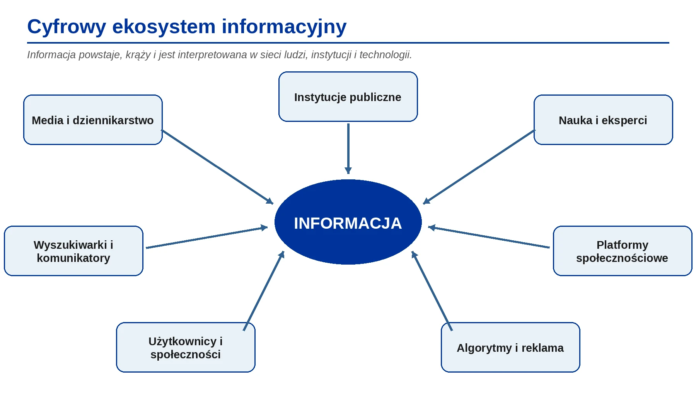
Cyfrowy ekosystem informacyjny to sieć osób, instytucji, platform, technologii i praktyk, za pomocą których informacje powstają, krążą i są interpretowane.
| Element | Funkcja w ekosystemie informacyjnym |
|---|---|
| Redakcje i organizacje medialne | Przygotowują oraz rozpowszechniają materiały dziennikarskie. |
| Platformy społecznościowe | Umożliwiają tworzenie, udostępnianie, komentowanie i ocenianie treści. |
| Wyszukiwarki | Porządkują wyniki i decydują o kolejności dostępu do informacji. |
| Influencerzy i twórcy | Wpływają na opinie, trendy, wybory i zachowania odbiorców. |
| Komunikatory | Przenoszą informacje w sieciach prywatnych lub częściowo zamkniętych. |
| Algorytmy | Wybierają, szeregują, polecają albo ukrywają treści. |
| Systemy AI | Generują, streszczają, klasyfikują, tłumaczą i polecają informacje. |
| Reklamodawcy | Zwiększają widoczność przekazów przez płatną promocję. |
| Użytkownicy | Odbierają, tworzą, komentują i udostępniają treści. |
| Fact-checkerzy | Weryfikują twierdzenia i badają przekazy wprowadzające w błąd. |
| Instytucje publiczne | Publikują komunikaty urzędowe, dane i dokumenty. |
| Źródła naukowe i akademickie | Dostarczają wiedzy opartej na badaniach i metodach naukowych. |
OECD wskazuje, że użytkownicy korzystają z platform medialnych i systemów AI, aby wyszukiwać wiadomości, uczyć się, kontaktować i współpracować. Jednocześnie treści internetowe mogą być nierzetelne, jednostronne, plagiatowane lub mylące, a generatywna AI przyspiesza ich produkcję.
Analiza ekosystemu pozwala ustalić, gdzie powstał błąd, kto zwiększył zasięg materiału i dlaczego treść słabej jakości dotarła do szerokiego grona odbiorców.
Moduł 1
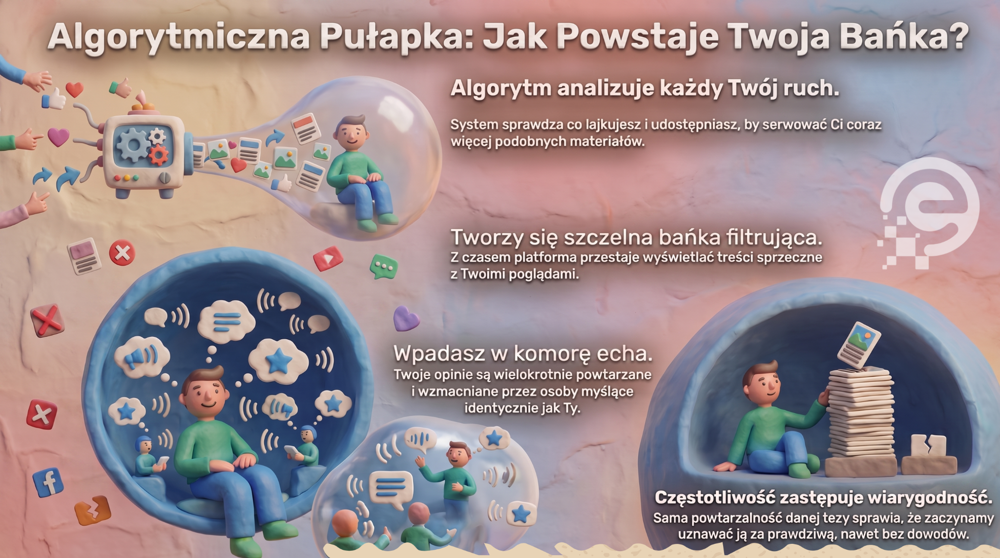
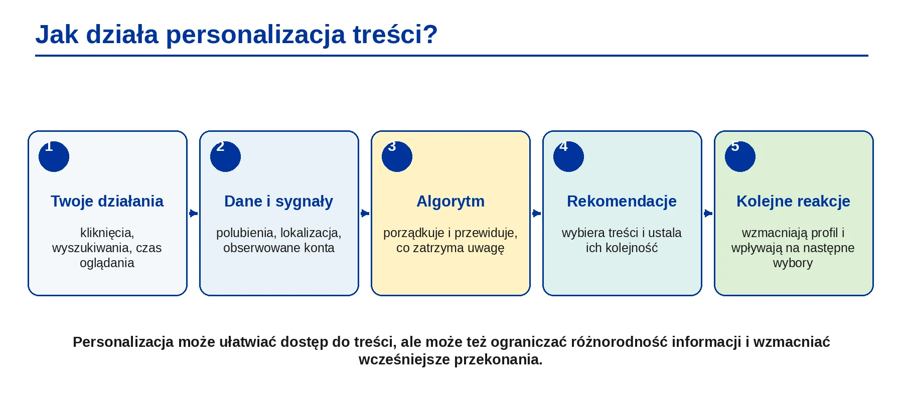
Platformy cyfrowe nie pokazują wszystkim tych samych treści. Algorytmy dobierają materiały do użytkownika na podstawie różnych sygnałów, takich jak:
Personalizacja ułatwia dostęp do treści zgodnych z zainteresowaniami, lecz może ograniczyć różnorodność informacji. W takim środowisku użytkownik:
Moduł 1
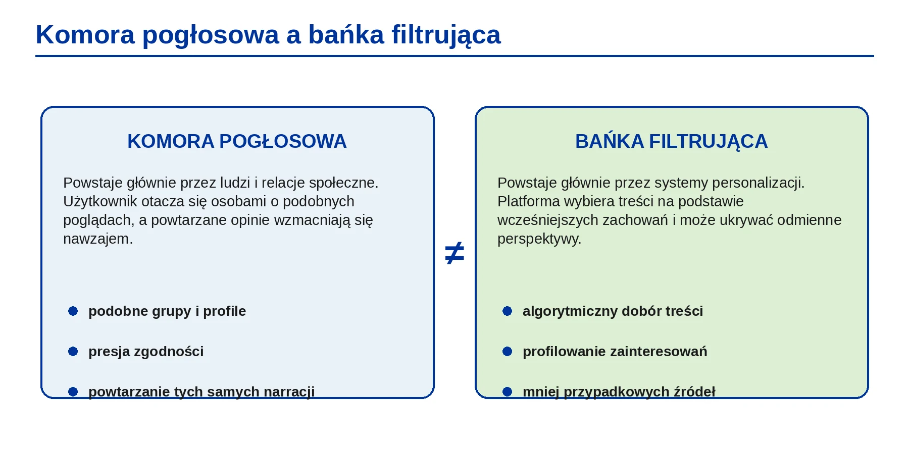
Komora pogłosowa to środowisko komunikacyjne, w którym człowiek spotyka głównie poglądy podobne do własnych. Powtarzane przekonania wzajemnie się wzmacniają. Z czasem uczestnik takiej przestrzeni może odnieść wrażenie, że:
Bańka filtrująca powstaje, gdy platforma dopasowuje treści do wcześniejszej aktywności użytkownika. Człowiek może wtedy nie widzieć pełnego zakresu dostępnych informacji.
Bańki filtrujące ograniczają kontakt z odmiennymi poglądami politycznymi, alternatywnymi wyjaśnieniami, głosami mniejszości, sprostowaniami i argumentami pokazującymi złożoność problemu. Komory pogłosowe oraz bańki filtrujące osłabiają krytyczną ocenę, ponieważ zmniejszają kontakt z różnorodnymi dowodami i punktami widzenia.
| Zjawisko | Jak powstaje | Możliwy skutek |
|---|---|---|
| Komora pogłosowa | Ludzie dobierają grupy i źródła zgodne z własnymi przekonaniami, a uczestnicy wzajemnie powtarzają podobne opinie. | Rosnąca pewność, że poglądy grupy są powszechne i bezsporne. |
| Bańka filtrująca | Platforma dobiera treści na podstawie zachowania i profilu użytkownika. | Mniejszy kontakt z innymi źródłami, argumentami i sprostowaniami. |
Moduł 1

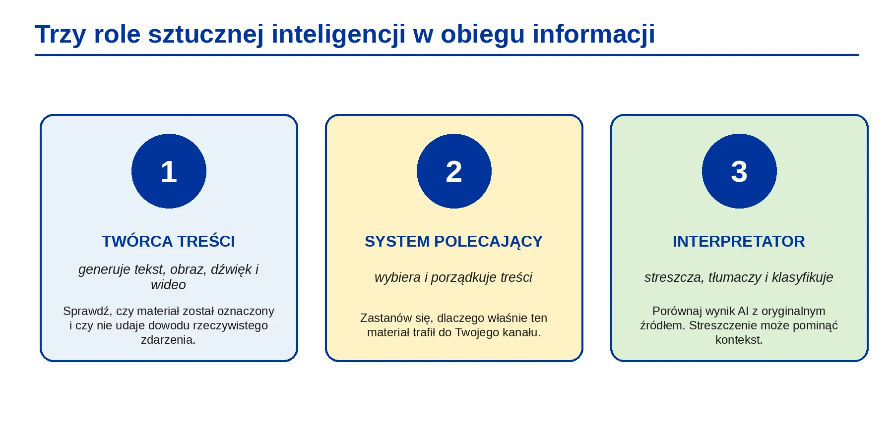
Sztuczna inteligencja uczestniczy w tworzeniu, wyborze i objaśnianiu informacji. Jej działanie często pozostaje niewidoczne, choć wpływa na treść komunikatu oraz kolejność materiałów wyświetlanych użytkownikowi.
Systemy AI mogą:
AILit Framework opisuje potrzebę rozumienia sposobu działania AI, jej wpływu społecznego i zasad etycznego użycia. W edukacji medialnej szczególnego znaczenia nabierają trzy funkcje AI:
AI potrafi wygenerować przekonujący tekst, obraz, film i nagranie głosu. Ułatwia pracę twórczą oraz naukę, lecz może też służyć do wytwarzania fikcyjnych dowodów, fałszywych profili i materiałów podszywających się pod rzeczywistość.
Systemy oparte na AI ustalają, co pojawi się w kanale użytkownika, wynikach wyszukiwania lub na liście rekomendacji. Wpływają więc na widoczność treści, nawet gdy użytkownik nie zdaje sobie z tego sprawy.
Narzędzia AI streszczają, tłumaczą i objaśniają informacje. Mogą jednak popełniać błędy, pomijać kontekst, mieszać źródła albo powtarzać uprzedzenia obecne w danych.
Moduł 1
PISA 2029 MAIL to obszar badania OECD dotyczący kompetencji medialnych i kompetencji związanych ze sztuczną inteligencją. Skrót MAIL pochodzi od angielskiej nazwy Media and Artificial Intelligence Literacy.
Badanie sprawdza, jak uczniowie oceniają wiarygodność, jakość i cel treści cyfrowych, rozumieją wpływ platform oraz systemów AI i podejmują decyzje w środowisku informacyjnym. Kurs dla osób dorosłych wykorzystuje tę ramę jako punkt odniesienia. Nie jest to test PISA ani forma oceniania uczestnika.
| Sytuacja | Umiejętność ćwiczona w module |
|---|---|
| Informacja dociera z kanału społecznościowego lub komunikatora | Ustalenie, skąd pochodzi i w jaki sposób trafiła do odbiorcy. |
| Platforma poleca kolejne materiały | Rozpoznanie wpływu algorytmu, personalizacji i wcześniejszej aktywności. |
| Treść wygląda przekonująco | Sprawdzenie autora, dowodów, celu i brakującego kontekstu. |
| AI tworzy, streszcza lub wybiera materiał | Ocena udziału AI oraz dotarcie do źródła pierwotnego. |
| Użytkownik chce zareagować lub udostępnić treść | Ocena skutków własnego działania dla innych osób i obiegu informacji. |
AILit Framework to ramy kompetencji w zakresie sztucznej inteligencji opracowane przez Komisję Europejską i OECD. Porządkują wiedzę i umiejętności potrzebne do rozumienia AI, korzystania z niej, tworzenia z jej pomocą oraz oceny skutków jej działania.
W tym module ramy AILit pomagają rozpoznać, że AI może uczestniczyć w obiegu informacji na kilku etapach: tworzyć materiał, wybierać go do rekomendacji, streszczać źródło albo tłumaczyć jego treść.
Moduł 1
| Obszar pytania | Pytania pomocnicze |
|---|---|
| Źródło | Kto stworzył informację? Czy autor lub organizacja są rozpoznawalni? Jakie mają kompetencje? Jaki może być cel publikacji? |
| Przekaz | Jaka jest główna teza? Jakie dowody ją wspierają? Czy język jest neutralny, czy emocjonalny? Czego nie pokazano? |
| Platforma | Gdzie zobaczyłem treść? Dlaczego platforma mogła mi ją wyświetlić? Czy była wyszukana, polecona, udostępniona lub promowana? |
| Sztuczna inteligencja | Czy AI mogła stworzyć, zmienić, streścić lub polecić materiał? Czy powinienem dotrzeć do źródła pierwotnego? |
| Moja reakcja | Jaką emocję wywołuje przekaz? Czy akceptuję go dlatego, że potwierdza moje poglądy? Czy odczuwam presję natychmiastowego udostępnienia? |
Moduł 1
Edukacja medialna należy do kompetencji obywatelskich. Uczestnictwo w demokracji wymaga dostępu do wiarygodnych informacji, porównywania stanowisk, rozpoznawania manipulacji, odróżniania dowodów od opinii i prowadzenia sporu bez rozpowszechniania szkodliwych treści.
Komisja Europejska łączy edukację medialną i krytyczne myślenie z odpornością demokratyczną, przygotowaniem obywateli oraz umiejętnością rozpoznawania zagrożeń dla integralności informacji.
Ciągły kontakt z informacjami może też obciążać psychicznie. Użytkownicy doświadczają przeciążenia, doomscrollingu, niepokoju wywołanego negatywnymi wiadomościami, zmęczenia emocjonalnego, presji szybkiej reakcji i dezorientacji wynikającej ze sprzecznych komunikatów.
Bardziej świadome nawyki korzystania z mediów obejmują:
Moduł 1
Przejdź przez ćwiczenia po kolei. Zaznacz odpowiedzi, które najlepiej opisują Twoje nawyki i sposób oceny informacji. W wybranych zadaniach zapisz jedno krótkie spostrzeżenie.
Zaznacz wszystkie sposoby, przez które informacje trafiły do Ciebie w ostatniej dobie. Następnie oceń, czy zwykle rozpoznajesz, kto lub co zdecydowało o ich wyświetleniu.
Zaznacz grupy źródeł, z których korzystasz. Potem oceń sposób porównywania informacji i wskaż ryzyko, na które chcesz zwracać większą uwagę.
Oceń, na ile zgadzasz się z każdym stwierdzeniem: 1 – zdecydowanie się nie zgadzam, 5 – zdecydowanie się zgadzam. Po udzieleniu wszystkich odpowiedzi zobaczysz wynik i obszary do dalszej pracy.
| Stwierdzenie | 1 | 2 | 3 | 4 | 5 |
|---|---|---|---|---|---|
| Porównuję informację w więcej niż jednym źródle. | |||||
| Sięgam do źródeł oficjalnych lub eksperckich. | |||||
| Sprawdzam, czy widzę różne perspektywy. | |||||
| Rozpoznaję wpływ algorytmów i emocjonalnego języka. | |||||
| Weryfikuję treść przed jej udostępnieniem. |
Odpowiedz na cztery różne pytania: o źródło, mechanizm manipulacji, sposób weryfikacji i odpowiedzialną reakcję.
Duży zasięg pokazuje zainteresowanie materiałem, lecz nie potwierdza jego prawdziwości. Algorytm może wzmacniać treści angażujące, kontrowersyjne albo emocjonalne. Wiarygodność ocenia się na podstawie autora, źródeł, dowodów i kontekstu.
Zapisz najważniejsze spostrzeżenie z modułu, zmianę, którą chcesz wprowadzić, oraz pytanie wymagające dalszego sprawdzenia.
Moduł 1
| Pojęcie | Definicja |
|---|---|
| Edukacja medialna | Zdolność do docierania do przekazów medialnych, analizowania ich, oceniania, tworzenia i odpowiedzialnego udostępniania. |
| Ekosystem informacyjny | Sieć osób, platform, instytucji i technologii uczestniczących w tworzeniu oraz rozpowszechnianiu informacji. |
| Algorytm | Zestaw reguł lub procesów używanych przez system cyfrowy do sortowania, porządkowania i polecania treści. |
| Personalizacja | Dopasowanie treści cyfrowych do zachowania, preferencji lub profilu użytkownika. |
| Komora pogłosowa | Środowisko, w którym użytkownik spotyka głównie poglądy podobne do własnych. |
| Bańka filtrująca | Spersonalizowane środowisko informacyjne, które może ograniczać kontakt z różnorodnymi perspektywami. |
| Treść wygenerowana przez AI | Tekst, obraz, dźwięk lub film utworzony przez system sztucznej inteligencji. |
| Treść wybrana przez AI | Materiał uporządkowany, sklasyfikowany lub polecony przez system oparty na AI. |
| Misinformation | Fałszywa lub niedokładna informacja rozpowszechniana bez koniecznej intencji wyrządzenia szkody. |
| Dezinformacja | Fałszywa lub myląca informacja stworzona albo udostępniona celowo, aby oszukać odbiorców. |
| Krytyczne myślenie | Analizowanie, ocenianie i interpretowanie informacji przed sformułowaniem wniosku. |
| Obywatelstwo cyfrowe | Odpowiedzialne, etyczne i aktywne uczestnictwo w środowisku cyfrowym. |
Moduł 1
1Edukacja medialna pomaga świadomie funkcjonować w środowisku cyfrowym.
2Informacje nie docierają przypadkowo. Ich widoczność kształtują platformy, algorytmy, sieci społeczne i systemy AI.
3Użytkownik jest odbiorcą, twórcą i uczestnikiem ekosystemu informacyjnego.
4Komory pogłosowe i bańki filtrujące mogą ograniczać kontakt z odmiennymi perspektywami.
5AI może tworzyć, wybierać, streszczać i przekształcać informacje.
6Krytyczna ocena zaczyna się od pytań o źródło, przekaz, platformę, technologię i własną reakcję.
7Edukacja medialna wspiera odpowiedzialną komunikację oraz uczestnictwo w życiu demokratycznym.
8Zdrowsze nawyki informacyjne zmniejszają przeciążenie i stres.
Moduł 1
[1] OECD. PISA 2029 Media and Artificial Intelligence Literacy (MAIL). https://www.oecd.org/en/about/projects/pisa-2029-media-and-artificial-intelligence-literacy.html
[2] AILit Framework. Empowering Learners for the Age of AI: An AI Literacy Framework for Primary and Secondary Education. https://ailiteracyframework.org/
[3] European Commission. Media literacy – Shaping Europe’s digital future. https://digital-strategy.ec.europa.eu/en/policies/media-literacy
[4] UNESCO. Media and Information Literacy Curriculum – E-version. https://www.unesco.org/mil4teachers/en/curriculum
[5] UNESCO. Media and Information Literacy. https://www.unesco.org/en/media-information-literacy
MODUŁ 2 · 22 tematów
Nieład informacyjny, mechanizmy emocjonalne, błędy poznawcze, weryfikacja oraz treści syntetyczne
Moduł 2
Pierwszy moduł przedstawił cyfrowy ekosystem informacyjny oraz wpływ platform, algorytmów, sieci społecznych i narzędzi AI na widoczność treści. Teraz przechodzimy do informacji fałszywych, mylących, jednostronnych i zbudowanych tak, aby wywołać określoną reakcję.
Określenie „fake news” nie opisuje wszystkich sposobów wprowadzania odbiorcy w błąd. Błędna informacja może zostać udostępniona bez złej intencji, fałszywy przekaz może powstać celowo, a prawdziwe dane mogą zostać pozbawione kontekstu lub użyte do wyrządzenia szkody. Dlatego moduł posługuje się szerszym pojęciem nieładu informacyjnego, obejmującym misinformation, dezinformację, malinformation, manipulację i stronniczość.
Zakres modułu odnosi się do PISA 2029 MAIL – obszaru badania OECD poświęconego kompetencjom medialnym i kompetencjom związanym z AI. W dalszej części zobaczysz, jak ta rama porządkuje ocenę wiarygodności, jakości i celu treści cyfrowych. Materiał nawiązuje też do programu UNESCO dotyczącego edukacji medialnej i informacyjnej, w tym do fact-checkingu, oceny źródeł, analizy treści i odpowiedzialnego korzystania z informacji.
Moduł 2
Po zakończeniu modułu uczestnik:
1wyjaśnia różnicę między misinformation, dezinformacją i malinformation;
2rozpoznaje typowe formy fałszywych i mylących przekazów;
3identyfikuje emocje wykorzystywane do sterowania uwagą i oceną;
4rozumie wpływ błędów poznawczych na interpretację informacji;
5stosuje podstawowe techniki fact-checkingu i weryfikacji;
6analizuje przykłady wiadomości za pomocą uporządkowanych pytań;
7rozpoznaje udział AI w tworzeniu i przekształcaniu dezinformacji;
8reaguje odpowiedzialnie na podejrzane treści.
Moduł 2
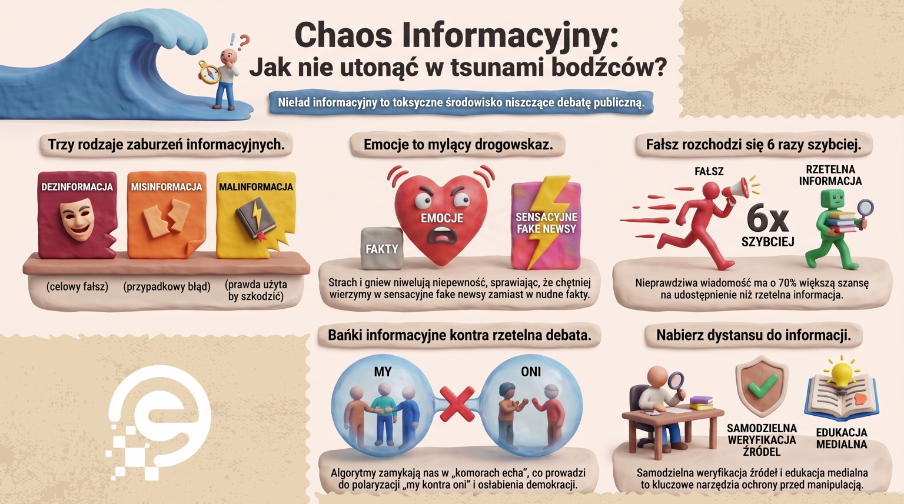
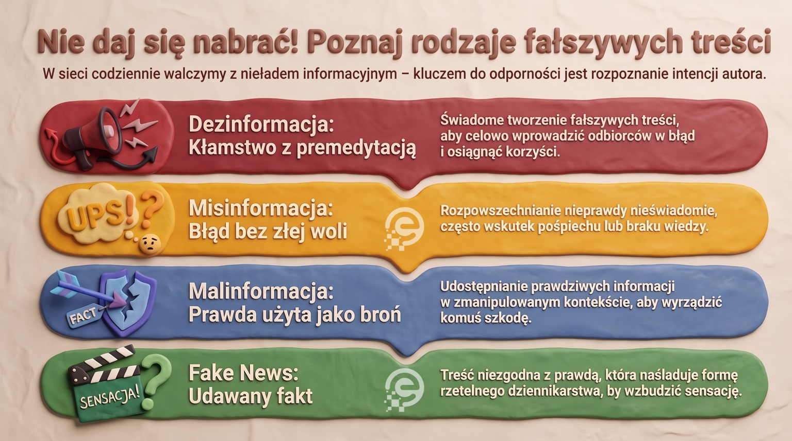
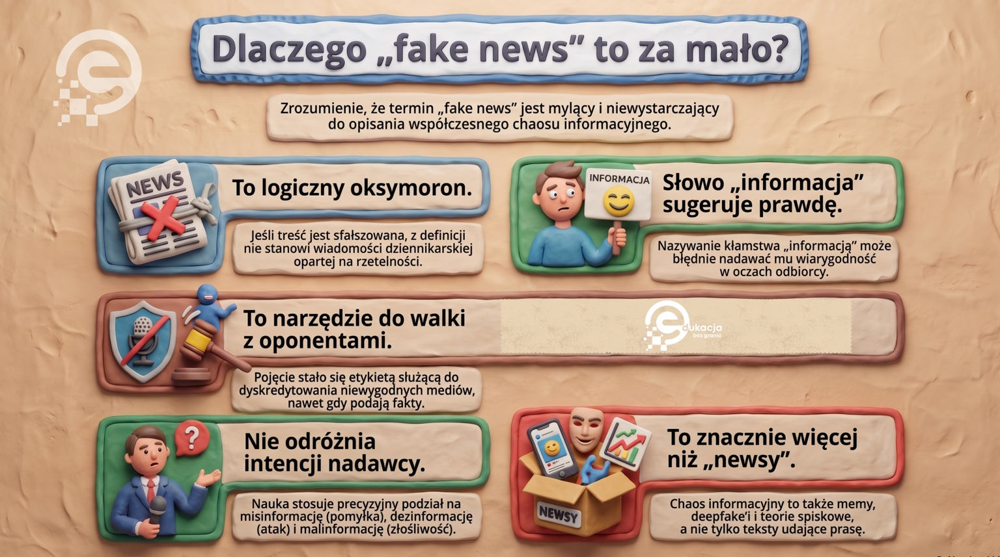
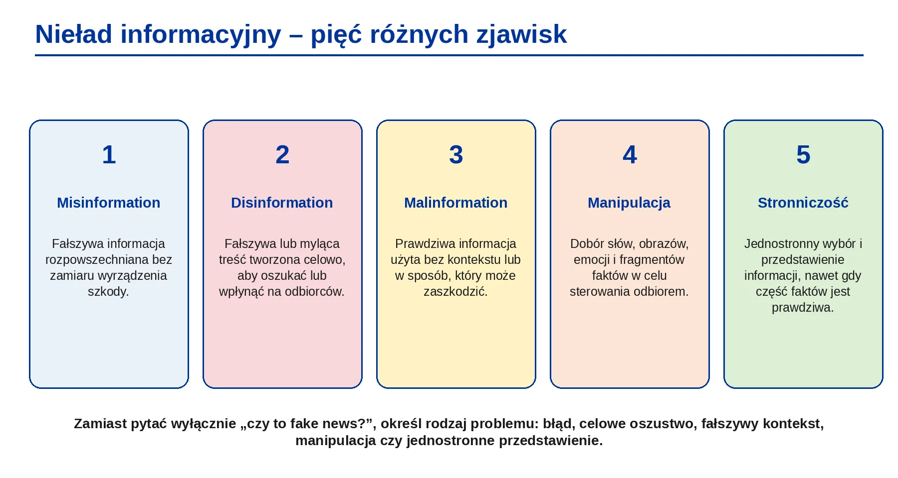
Jedno określenie „fake news” łączy zjawiska, które różnią się intencją, sposobem przygotowania i skutkami. Całkowicie zmyślony artykuł, nagłówek wyolbrzymiający wynik badania, stare zdjęcie użyte jako dowód aktualnego wydarzenia, satyra potraktowana jak wiadomość oraz jednostronny komentarz polityczny wymagają odmiennej oceny.
| Rodzaj | Znaczenie | Przykład |
|---|---|---|
| Misinformation | Fałszywa lub niedokładna informacja udostępniona bez koniecznej intencji wyrządzenia szkody. | Ktoś przekazuje błędną poradę zdrowotną, ponieważ uważa ją za pomocną. |
| Dezinformacja | Fałszywa lub myląca treść stworzona albo rozpowszechniana celowo, aby oszukać, wpłynąć na odbiorców lub wyrządzić szkodę. | Skoordynowana kampania publikuje fałszywe twierdzenie przed wyborami. |
| Malinformation | Prawdziwa informacja użyta w sposób szkodliwy, mylący lub pozbawiony kontekstu. | Prywatne dane zostają ujawnione po to, aby zniszczyć czyjąś reputację. |
| Manipulacja | Strategiczne użycie języka, obrazu, emocji, ramy interpretacyjnej albo wybranych faktów, aby wpłynąć na odbiór. | Post wykorzystuje strach i presję czasu, aby skłonić do udostępnienia. |
| Stronniczość | Jednostronny sposób doboru, przedstawiania lub interpretowania informacji. | Materiał pokazuje wyłącznie dane wspierające jedno stanowisko polityczne. |
Komisja Europejska wskazuje, że podczas sytuacji kryzysowych błędne informacje mogą wynikać z nieporozumienia, słabej komunikacji lub szybkiego obiegu niesprawdzonych treści. Nawet osoba działająca bez złej intencji może zwiększyć zasięg narracji stworzonej w celu oszustwa i doprowadzić do szkody poza internetem.
Moduł 2
Rozprzestrzenianie fałszywych i manipulacyjnych treści wynika z połączenia mechanizmów technologicznych, reakcji psychologicznych i zachowań społecznych.
Platformy premiują treści, które przyciągają uwagę. Materiał wywołujący kliknięcia, komentarze, reakcje i udostępnienia może otrzymać większy zasięg. Przekazy szokujące, polaryzujące lub budzące silne emocje rozchodzą się więc szybko, nawet gdy ich jakość jest niska.
Ludzie chętniej wierzą w informacje i udostępniają je, gdy przekaz:
Użytkownicy udostępniają treści, aby:
Moduł 2
| Typ | Opis | Przykład |
|---|---|---|
| Treść całkowicie zmyślona | Fałszywa informacja przedstawiona jako fakt. | Zmyślony artykuł o zmianie zasad świadczeń publicznych. |
| Mylący nagłówek | Nagłówek wyolbrzymia lub zniekształca treść materiału. | „Naukowcy dowiedli, że X jest niebezpieczne”, choć badanie było ograniczone i nie daje takiego wniosku. |
| Fałszywy kontekst | Prawdziwa treść zostaje przypisana do innego czasu, miejsca lub wydarzenia. | Stare zdjęcie z innego kraju jest przedstawiane jako aktualne wydarzenie w Polsce. |
| Podszywanie się | Autor udaje zaufaną osobę, instytucję albo redakcję. | Fałszywe konto naśladuje urząd lub organ państwowy. |
| Treść zmanipulowana | Autentyczny materiał zostaje przerobiony, przycięty lub zmontowany w celu zmiany znaczenia. | Krótki fragment nagrania usuwa wypowiedź poprzedzającą i zmienia sens słów. |
| Satyra uznana za wiadomość | Humorystyczny materiał zostaje potraktowany jako informacja faktyczna. | Artykuł z portalu satyrycznego krąży jako opis rzeczywistego zdarzenia. |
| Cherry-picking | Autor wybiera wyłącznie dane zgodne z tezą i pomija informacje, które jej przeczą. | Post przywołuje pojedynczy procent bez liczebności próby i bez porównania. |
| Rama spiskowa | Przekaz sugeruje ukrytą kontrolę wpływowej grupy, ale nie pokazuje dowodów. | „Oni ukrywają przed tobą prawdę”. |
| Fałszywa treść wygenerowana przez AI | AI tworzy przekonujący, lecz fikcyjny tekst, obraz, głos lub film. | Realistyczne zdjęcie wydarzenia, które nigdy się nie odbyło. |
OECD zwraca uwagę, że generatywna AI przyspiesza i upraszcza wytwarzanie treści. Zwiększa to liczbę materiałów dostępnych w sieci i utrudnia szybką ocenę ich pochodzenia.
Moduł 2


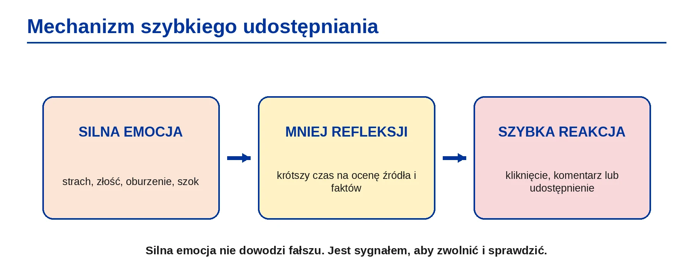
Przekaz manipulacyjny próbuje wywołać reakcję przed sprawdzeniem faktów. Najczęściej wykorzystuje:
Silna emocja nie dowodzi, że wiadomość jest fałszywa. Prawdziwe wydarzenia również budzą lęk, gniew lub współczucie. Emocja powinna jednak uruchomić przerwę i potrzebę sprawdzenia treści.

Post wykorzystuje strach, presję czasu, nieokreślone oskarżenie, nacisk emocjonalny i brak dowodów. Uważny odbiorca powinien zapytać: Kogo oznacza „oni”? Co dokładnie zarzuca autor? Gdzie znajdują się dowody? Dlaczego mam udostępnić nagranie natychmiast?
Wybierz odpowiedzi, które najlepiej opisują Twoją reakcję na fikcyjny post.
Moduł 2
Błędy poznawcze wynikają z uproszczeń, które przyspieszają ocenę sytuacji. Ułatwiają codzienne decyzje, lecz w kontakcie z niepełnym lub emocjonalnym przekazem mogą prowadzić do mylnego wniosku.
| Błąd poznawczy | Na czym polega? | Pytanie kontrolne |
|---|---|---|
| Efekt potwierdzenia | Preferujemy informacje zgodne z tym, w co już wierzymy. | Czy akceptuję przekaz dlatego, że się z nim zgadzam? |
| Heurystyka dostępności | Oceniamy zdarzenie jako częste lub prawdopodobne, ponieważ łatwo przywołać wyrazisty przykład. | Czy opieram ocenę na danych, czy na zapamiętanym przypadku? |
| Efekt autorytetu | Ufamy przekazowi, bo pochodzi od osoby, która wygląda na wpływową lub kompetentną. | Czy ta osoba rzeczywiście zna się na tym temacie? |
| Stronniczość grupowa | Łatwiej ufamy informacjom pochodzącym od ludzi podobnych do nas. | Czy uwierzyłbym w to samo, gdyby napisała to inna grupa? |
| Negativity bias | Negatywne treści przyciągają więcej uwagi niż neutralne lub pozytywne. | Czy reaguję głównie dlatego, że materiał jest alarmujący? |
| Efekt iluzorycznej prawdy | Często powtarzana informacja zaczyna wydawać się prawdziwa mimo braku dowodów. | Czy widziałem dowód, czy wyłącznie wiele razy spotkałem to twierdzenie? |
| Efekt zakotwiczenia | Pierwsza poznana informacja wpływa na późniejszą ocenę. | Czy nadal kieruję się pierwszą wersją wydarzeń? |
Rozpoznanie błędów poznawczych nie oznacza, że człowiek jest nieracjonalny. Ocena zależy od emocji, pamięci, tożsamości, powtarzalności informacji i zaufania społecznego. Edukacja medialna pomaga zauważyć te wpływy przed podjęciem decyzji.
Zaznacz mechanizmy, które mogły wpłynąć na Twoją pierwszą ocenę. Następnie wybierz działanie, które pomaga skorygować tę ocenę.
Moduł 2


Moduł 2
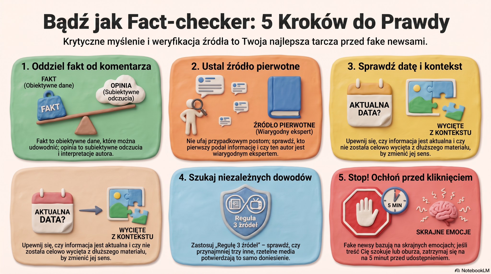
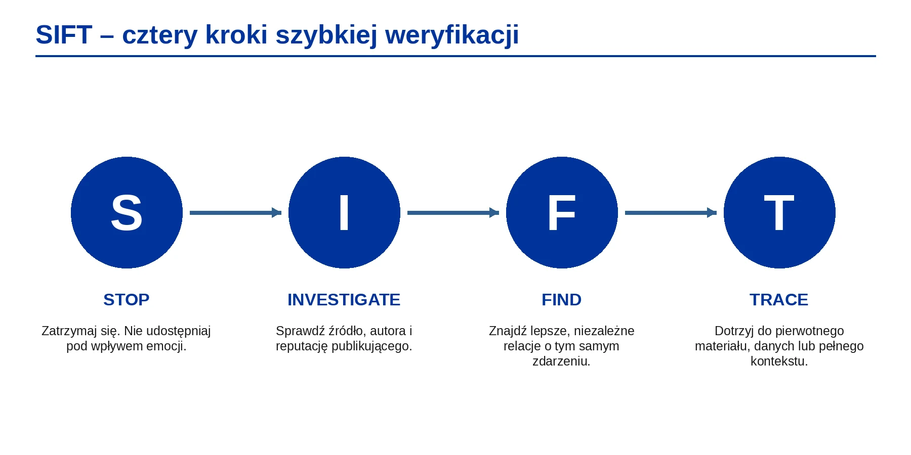
Weryfikację rozpocznij od zatrzymania automatycznej reakcji i sformułowania precyzyjnych pytań. Specjalistyczne narzędzia przydają się później; pierwszym krokiem pozostaje ocena źródła, tezy i dowodów.
SIFT to angielski akronim porządkujący cztery szybkie kroki weryfikacji treści internetowej: zatrzymanie reakcji, zbadanie źródła, znalezienie lepszego omówienia i dotarcie do pierwotnego kontekstu. To procedura pomocnicza, a nie automatyczny test wiarygodności.
Fact-checking oznacza systematyczne sprawdzanie twierdzeń, źródeł i materiałów przedstawianych jako fakty. Nie ogranicza się do wydania oceny „prawda” lub „fałsz”. Obejmuje także ustalenie kontekstu, zakresu danych i tego, czy wniosek odpowiada przedstawionym dowodom.
| Etap | Pytanie lub działanie |
|---|---|
| S – Stop / Zatrzymaj się | Nie reaguj i nie udostępniaj od razu. Nazwij własną emocję. |
| I – Investigate the source / Zbadaj źródło | Ustal, kto stworzył treść, czy jest wiarygodny i po co ją opublikował. |
| F – Find better coverage / Znajdź lepsze źródła | Sprawdź, czy wiarygodne redakcje, instytucje lub eksperci opisują to samo twierdzenie. |
| T – Trace to the original context / Dotrzyj do pierwotnego kontekstu | Ustal, skąd pochodzi cytat, zdjęcie, nagranie, dokument albo dane. |
Cztery kroki pomagają ustalić, czego jeszcze nie wiadomo. Dopiero po ich wykonaniu można zdecydować, czy materiał jest wystarczająco potwierdzony, wymaga dalszego sprawdzenia albo nie powinien być rozpowszechniany.
Czytanie boczne polega na opuszczeniu analizowanej strony i otwarciu innych źródeł. Zamiast wierzyć temu, co portal mówi o sobie, użytkownik sprawdza, jak opisują go niezależne źródła. W ten sam sposób porównuje twierdzenie z materiałami urzędowymi, naukowymi, dziennikarskimi i fact-checkingowymi.

Moduł 2
Zaznacz elementy, które udało Ci się potwierdzić. Niezaznaczone punkty wskazują kwestie wymagające dalszego sprawdzenia.
Moduł 2


Media syntetyczne to teksty, obrazy, nagrania głosu lub filmy utworzone albo przekształcone przez system cyfrowy. Deepfake jest ich szczególną formą: naśladuje wygląd, ruch lub głos konkretnej osoby tak, aby materiał mógł zostać odebrany jako autentyczny.
AI może sprawić, że dezinformacja będzie bardziej przekonująca i łatwiejsza do przygotowania. Systemy potrafią tworzyć:
Treść wygenerowana przez AI może wspierać edukację, twórczość, komunikację i dostępność. Ryzyko pojawia się wtedy, gdy materiał syntetyczny zostaje przedstawiony jako zapis rzeczywistego zdarzenia lub autentyczna wypowiedź konkretnej osoby.
Kompetencje opisane w AILit pomagają rozpoznawać udział AI, rozumieć ograniczenia jej odpowiedzi oraz podejmować odpowiedzialne decyzje dotyczące korzystania z treści pośredniczonych przez sztuczną inteligencję.
Materiały edukacyjne
Najpierw obejrzyj przykłady syntetycznego obrazu i głosu, a następnie materiały pokazujące sygnały ostrzegawcze. Pamiętaj, że pojedynczy błąd w obrazie nie przesądza o manipulacji, a brak widocznych błędów nie potwierdza autentyczności nagrania.
Przykłady
W każdym materiale zwróć uwagę na źródło publikacji, kontekst oraz możliwość niezależnego potwierdzenia wypowiedzi lub zdarzenia.
Obejrzyj materiał i sprawdź, co mogłoby skłonić odbiorcę do uznania go za autentyczny.
Autora, miejsce pierwszej publikacji, istnienie nagrania źródłowego oraz potwierdzenie w niezależnych źródłach.
Porównaj, jak syntetyczny obraz i głos mogą tworzyć wiarygodne wrażenie autentyczności.
Znajomy głos, naturalna mimika i profesjonalny montaż mogą zwiększać zaufanie, lecz nie potwierdzają tożsamości ani prawdziwości wypowiedzi.
Potraktuj materiał jako kolejne studium przypadku i oceń go bez opierania się wyłącznie na pierwszym wrażeniu.
Brak oczywistych usterek technicznych nie oznacza, że materiał jest prawdziwy. Sprawdź jego pochodzenie i pierwotny kontekst.
Rozpoznawanie
Sygnały techniczne pomagają rozpocząć weryfikację. Ostateczna ocena powinna uwzględniać również źródło, datę, kontekst i niezależne potwierdzenie.
Materiał porządkuje podstawowe sygnały ostrzegawcze i pokazuje, jak podejść do podejrzanego nagrania.
Potraktuj zauważone nieprawidłowości jako sygnał do dalszego sprawdzania, a nie jako automatyczny dowód fałszerstwa.
Materiał koncentruje się na wizualnych niespójnościach, które mogą wskazywać na cyfrową ingerencję.
Na krawędzie twarzy, ruch ust, mruganie, oświetlenie, cienie, odbicia, dłonie oraz niespójności pojawiające się między kolejnymi klatkami.
Moduł 2
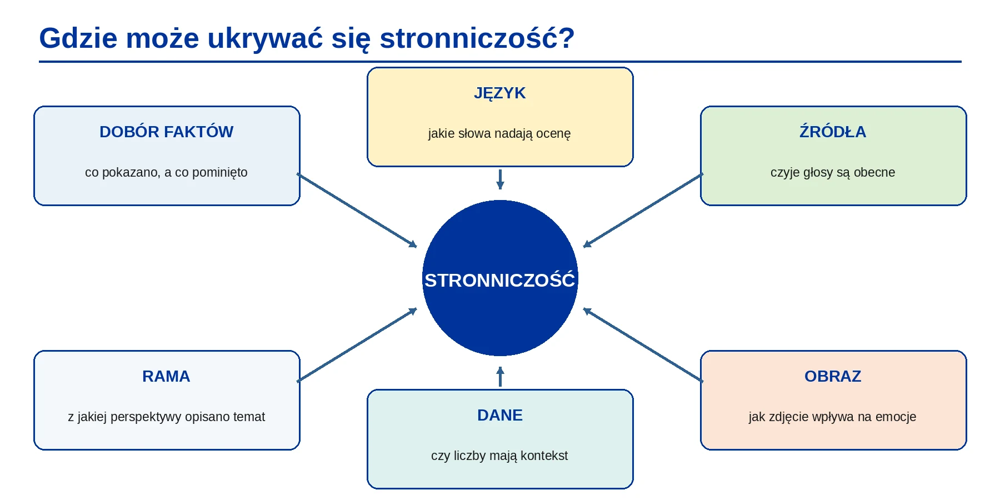
Stronniczy materiał może zawierać prawdziwe dane. Jednostronność wynika wtedy z doboru faktów, pominiętego kontekstu, sposobu przedstawienia lub języka, który kieruje oceną odbiorcy.
| Rodzaj | Opis | Przykład |
|---|---|---|
| Stronniczość doboru | Autor pokazuje tylko część faktów. | Materiał przedstawia wyłącznie negatywne przypadki dotyczące określonej grupy. |
| Stronniczość ramy | To samo wydarzenie zostaje opisane z wybranego punktu widzenia. | Protest jest nazwany „zakłóceniem porządku” albo „mobilizacją obywatelską”. |
| Stronniczość źródeł | Autor cytuje tylko jeden rodzaj rozmówców. | Artykuł przywołuje wyłącznie polityków, pomijając osoby bezpośrednio dotknięte sytuacją. |
| Stronniczość obrazu | Zdjęcie buduje określone skojarzenie. | Dramatyczne zdjęcie towarzyszy neutralnej informacji. |
| Stronniczość języka | Słowa niosą ocenę emocjonalną lub ideologiczną. | „Bojownicy o wolność” i „terroryści”; „migranci” i „najeźdźcy”. |
| Stronniczość statystyczna | Dane są pokazane bez niezbędnego kontekstu. | Podano procent bez liczebności próby, okresu i punktu odniesienia. |
| Fałszywa równowaga | Nierówne jakościowo stanowiska zostają przedstawione jako równie wiarygodne. | Konsensus naukowy zostaje pokazany jako jedna z dwóch równorzędnych opinii. |
Podczas analizy zapytaj:
Nagłówek A „Nowe dane pokazują gwałtowny wzrost bezrobocia wśród młodych osób”.
Nagłówek B „Stopa bezrobocia młodych pozostaje niższa niż pięć lat temu mimo ostatniego wzrostu”.
Moduł 2
Po rozpoznaniu podejrzanej treści nie zwiększaj jej zasięgu. Dobierz reakcję do sytuacji, korzystając z poniższych możliwości:
1zatrzymanie się przed udostępnieniem;
2sprawdzenie źródła i dowodów;
3poszukanie wiarygodnych omówień;
4niewzmacnianie szkodliwej treści;
5spokojne sprostowanie błędnej informacji;
6udostępnienie materiału zweryfikowanego;
7zgłoszenie podszywającego się konta albo treści szkodliwej;
8rozpoznanie momentu, w którym rozmowa przestaje być produktywna;
9ochronę osób narażonych na nękanie lub ujawnienie danych;
10ocenę możliwych skutków publicznego udostępnienia.
Materiały UNESCO dotyczące edukacji medialnej i informacyjnej proponują pracę ze studiami przypadków, analizę problemu, badanie źródeł, analizę treści i kontekstu oraz samodzielne tworzenie komunikatów. Takie działania pomagają zrozumieć mechanizm dezinformacji, a nie wyłącznie zapamiętać definicje.
Moduł 2
PISA 2029 MAIL to obszar badania OECD poświęcony kompetencjom medialnym i kompetencjom związanym z AI. W tym module służy jako mapa umiejętności potrzebnych podczas oceny podejrzanej treści. Nie stanowi testu ani kryterium zaliczenia kursu.
| Gdy analizujesz treść… | Sprawdź |
|---|---|
| Nie wiesz, kto ją opublikował | Autora, instytucję, historię konta i wiarygodność źródła. |
| Twierdzenie brzmi stanowczo | Dowody, źródło pierwotne, datę i pełny kontekst. |
| Przekaz wywołuje silną emocję | Czy emocja nie zastępuje argumentów i czy nie pojawia się presja szybkiej reakcji. |
| Materiał mógł powstać z udziałem AI | Jego pochodzenie, wcześniejsze publikacje i niezależne potwierdzenie. |
| Rozważasz udostępnienie | Możliwe skutki rozpowszechnienia treści błędnej, niepełnej lub szkodliwej. |
Nazwa ramy jest mniej istotna niż nawyk: ustal źródło, sprawdź dowody, rozpoznaj cel i zdecyduj, czy dalsze rozpowszechnianie materiału jest odpowiedzialne.
Moduł 2
AILit Framework to ramy kompetencji w zakresie sztucznej inteligencji opracowane przez Komisję Europejską i OECD. W tym module pomagają oceniać treści, które AI mogła wygenerować, zmienić, streścić albo polecić.
| Sytuacja | Odpowiedzialne działanie |
|---|---|
| Tekst lub obraz wygląda profesjonalnie, lecz nie ma autora | Sprawdź pochodzenie materiału i poszukaj źródła pierwotnego. |
| Odpowiedź AI zawiera konkretną informację | Zweryfikuj ją w źródle urzędowym, naukowym lub innym właściwym dla tematu. |
| AI streszcza artykuł albo dokument | Porównaj streszczenie z oryginałem, zwłaszcza w sprawach zdrowotnych, prawnych i publicznych. |
| Materiał syntetyczny przedstawia konkretną osobę | Oceń ryzyko szkody, podszywania się i naruszenia reputacji przed publikacją. |
| System poleca serię podobnych treści | Sprawdź, czy rekomendacje nie ograniczają kontaktu z innymi źródłami i wyjaśnieniami. |
Moduł 2


Przy każdym elemencie wybierz odpowiedź, która najlepiej opisuje materiał. Następnie porównaj swoje wybory z wyjaśnieniem pod ćwiczeniem.
Fotografia może być autentyczna, a mimo to wprowadzać w błąd przez błędny podpis. Trzeba ustalić, gdzie i kiedy ją wykonano, znaleźć najwcześniejszą publikację oraz porównać opis z niezależnymi źródłami.
Moduł 2
| Pojęcie | Definicja |
|---|---|
| Fake news | Szerokie, potoczne określenie fałszywej lub mylącej informacji przedstawionej jako wiadomość. |
| Misinformation | Fałszywa lub niedokładna informacja przekazana bez koniecznej intencji wyrządzenia szkody. |
| Dezinformacja | Fałszywa lub myląca informacja stworzona albo rozpowszechniana celowo, aby oszukać lub zaszkodzić. |
| Malinformation | Prawdziwa informacja wykorzystana w sposób szkodliwy albo mylący. |
| Manipulacja | Użycie technik wpływających na odbiór, emocje lub zachowanie. |
| Stronniczość | Jednostronna tendencja w doborze, prezentowaniu lub interpretowaniu informacji. |
| Wyzwalacz emocjonalny | Element przekazu przygotowany po to, aby wywołać silną reakcję. |
| Błąd poznawczy | Skrót myślowy, który może wpływać na ocenę. |
| Efekt potwierdzenia | Tendencja do preferowania informacji zgodnych z wcześniejszymi przekonaniami. |
| Cherry-picking | Wybieranie wyłącznie dowodów wspierających jeden wniosek. |
| Fałszywy kontekst | Przedstawienie autentycznego materiału w mylącym czasie, miejscu albo sytuacji. |
| Deepfake | Wygenerowany lub zmieniony przez AI obraz, dźwięk albo film, który wygląda realistycznie. |
| Czytanie boczne | Sprawdzanie, co niezależne źródła mówią o analizowanej stronie lub twierdzeniu. |
| Fact-checking | Proces sprawdzania, czy twierdzenia są zgodne z faktami i poparte dowodami. |
Moduł 2
Wybierz odpowiedzi, które najlepiej opisują Twoją ocenę, a następnie zapisz własną zasadę stosowaną przed udostępnieniem treści.
Moduł 2
Oceń, na ile zgadzasz się z każdym stwierdzeniem: 1 – zdecydowanie się nie zgadzam, 5 – zdecydowanie się zgadzam. Po udzieleniu wszystkich odpowiedzi zobaczysz wynik i obszary do dalszej pracy.
| Stwierdzenie | 1 | 2 | 3 | 4 | 5 |
|---|---|---|---|---|---|
| Rozpoznaję różnicę między błędną informacją a dezinformacją. | |||||
| Zauważam emocjonalny język i presję czasu. | |||||
| Rozpoznaję wpływ błędów poznawczych. | |||||
| Stosuję podstawowe kroki SIFT i czytanie boczne. | |||||
| Potrafię odpowiedzialnie zareagować na podejrzaną treść. |
Moduł 2
1Określenie „fake news” jest mało precyzyjne. Kategorie misinformation, dezinformacji i malinformation lepiej opisują różne sytuacje.
2Manipulacja często wykorzystuje emocje, presję czasu, strach, tożsamość grupową i nieufność.
3Błędy poznawcze wpływają na interpretowanie i udostępnianie informacji.
4Materiał może być stronniczy, mimo że zawiera część prawdziwych danych.
5AI ułatwia szybkie tworzenie realistycznych i spersonalizowanych treści fałszywych lub mylących.
6Fact-checking zaczyna się od zatrzymania, zbadania źródła, znalezienia lepszego omówienia i dotarcia do pierwotnego kontekstu.
7Odpowiedzialny użytkownik nie zwiększa zasięgu treści niezweryfikowanej ani szkodliwej.
8Edukacja medialna nie polega na nieufności wobec wszystkiego. Polega na uważnym sprawdzaniu, rozumowaniu i odpowiedzialnym działaniu.
Moduł 2
Fake news i manipulacja dotyczą treści, lecz również uwagi, emocji, tożsamości, technologii i zaufania. Skuteczna ochrona przed manipulacją zaczyna się od prostego nawyku.
Taki sposób działania wzmacnia krytyczne myślenie, chroni debatę demokratyczną i pomaga odpowiedzialnie uczestniczyć w cyfrowym środowisku informacyjnym.
Moduł 2
OECD – PISA 2029 Media and Artificial Intelligence Literacy: https://www.oecd.org/en/about/projects/pisa-2029-media-and-artificial-intelligence-literacy.html
AILit Framework – AI Literacy Framework: https://ailiteracyframework.org/
UNESCO – Media and Information Literacy Curriculum for Teachers: https://www.unesco.org/mil4teachers/en/curriculum-framework/about-curriculum
UNESCO – Media and Information Literacy: Misinformation and Disinformation: https://www.unesco.org/mil4teachers/en/module4/unit5
European Commission – Media Literacy: https://digital-strategy.ec.europa.eu/en/policies/media-literacy
European Commission – Information Manipulation and Misinformation: https://civil-protection-humanitarian-aid.ec.europa.eu/resources-campaigns/information-manipulation-and-misinformation_en
University of California, Merced Library – The SIFT Method: https://libguides.ucmerced.edu/news/evaluation/sift-method
Digital Inquiry Group – Lateral Reading on the Open Internet: https://cor.inquirygroup.org/research/lateral-reading-on-the-open-internet
MODUŁ 3 · 27 tematów
Ocena źródeł i dowodów, dane, narracje, błędy rozumowania, model CLEAR oraz odpowiedzialne korzystanie z AI
Moduł 3
Poprzednie moduły wyjaśniły, jak działa cyfrowy obieg informacji oraz w jaki sposób powstają fake newsy, manipulacja i stronniczość. Moduł 3 koncentruje się na analizie informacji i podejmowaniu decyzji na podstawie dowodów, kontekstu oraz namysłu.
Krytyczne myślenie nie oznacza odrzucania każdej wiadomości ani traktowania wszystkich źródeł z jednakową nieufnością. Polega na zrozumieniu tezy, zadaniu właściwych pytań, ocenie dowodów, rozpoznaniu założeń i sformułowaniu uzasadnionego wniosku.
W internecie decyzje często zapadają pod presją czasu i na podstawie niepełnego, emocjonalnego albo sprzecznego przekazu. Algorytm może dodatkowo zwiększyć jego widoczność. Skutki dotyczą zdrowia, pracy, edukacji, finansów, spraw publicznych oraz odpowiedzialności za udostępnianie informacji.
Moduł 3
To, co czytamy, oglądamy i uznajemy za wiarygodne, wpływa na zachowanie. Na podstawie informacji podejmujemy decyzje zawodowe, zdrowotne, finansowe i obywatelskie, a przez udostępnienia wpływamy również na decyzje innych osób.
Mylący przekaz może sprawić, że ktoś:
Krytyczne myślenie wzmacnia samodzielność oceny. Pozwala zatrzymać szybką reakcję, sprawdzić dowody i ograniczyć ryzyko decyzji opartych na emocjach, stronniczości lub niepełnym obrazie sytuacji.
Moduł 3
Po zakończeniu modułu uczestnik:
1wyjaśnia znaczenie krytycznego myślenia w edukacji medialnej;
2odróżnia fakty, opinie, interpretacje, założenia, przewidywania i sądy wartościujące;
3ocenia wiarygodność, aktualność, przejrzystość i przydatność źródeł;
4sprawdza, czy dowody rzeczywiście wspierają przedstawioną tezę;
5analizuje dane, statystyki, narracje i ramy interpretacyjne;
6rozpoznaje podstawowe błędy logiczne i błędy poznawcze;
7stosuje model CLEAR podczas podejmowania decyzji;
8analizuje dezinformację zdrowotną i komunikaty o ryzyku;
9rozpoznaje sytuacje, w których AI może wspierać albo zniekształcać ocenę;
10tworzy własne zasady podejmowania decyzji opartych na dowodach.
Moduł 3
Krytyczne myślenie polega na jasnym i uważnym rozumowaniu przed przyjęciem twierdzenia lub podjęciem decyzji.
Osoba myśląca krytycznie pyta:
Moduł 3
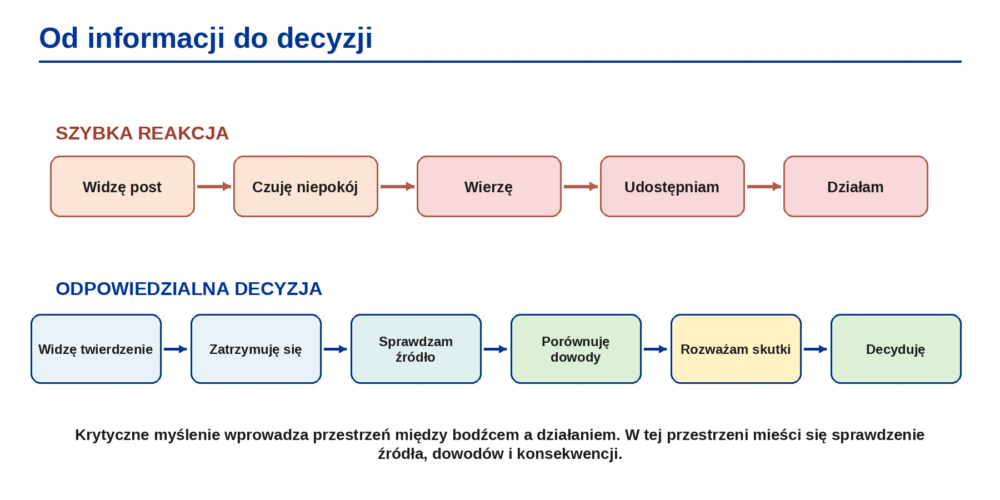
W codziennych sytuacjach przejście od informacji do działania bywa niemal natychmiastowe.
| Reakcja szybka | Decyzja odpowiedzialna |
|---|---|
| Widzę post → czuję niepokój → uznaję go za prawdziwy → udostępniam → działam. | Widzę twierdzenie → zatrzymuję się → sprawdzam źródło → oceniam dowody → porównuję informacje → zauważam własną reakcję → decyduję. |
Zatrzymanie się jest szczególnie potrzebne, gdy informacja:
Moduł 3
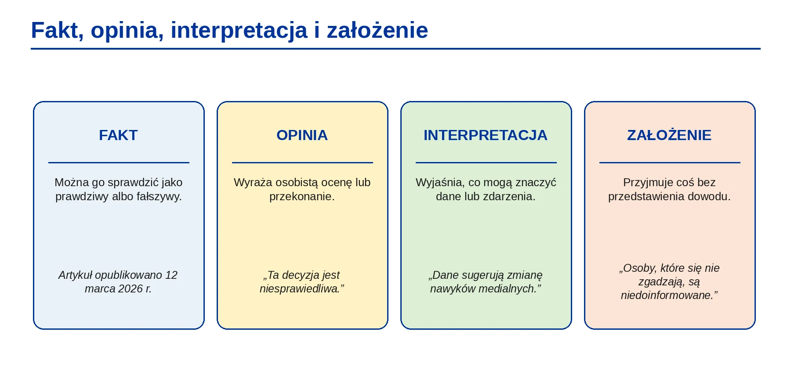
Mylące przekazy często łączą kilka rodzajów zdań. Odbiorca może wtedy odebrać opinię lub przypuszczenie jak potwierdzony fakt.
| Rodzaj wypowiedzi | Znaczenie | Przykład |
|---|---|---|
| Fakt | Zdanie, które można sprawdzić i uznać za prawdziwe albo fałszywe. | Artykuł opublikowano 12 marca 2026 r. |
| Opinia | Osobisty pogląd lub ocena. | Ta decyzja jest niesprawiedliwa. |
| Interpretacja | Wyjaśnienie tego, co mogą oznaczać fakty. | Dane wskazują, że zmieniają się nawyki medialne młodych ludzi. |
| Założenie | Twierdzenie przyjęte bez udowodnienia. | Osoby, które się z tym nie zgadzają, są niedoinformowane. |
| Przewidywanie | Zdanie dotyczące możliwego przyszłego zdarzenia. | Ta technologia zmieni sposób pracy urzędów. |
| Sąd wartościujący | Ocena oparta na wartościach etycznych, kulturowych lub osobistych. | Instytucje powinny chronić dobrostan cyfrowy pracowników. |
Dla każdego zdania wybierz jedną kategorię dominującą. Na końcu możesz zapisać jedną uwagę do wypowiedzi niejednoznacznej.
Moduł 3


Źródło może być rzetelne, stronnicze, niepełne, eksperckie, nieaktualne, reklamowe albo celowo mylące. Wiarygodności nie ocenia się na podstawie wyglądu strony ani liczby udostępnień.
| Kryterium | Pytania kontrolne |
|---|---|
| Autorstwo i kompetencje | Kto przygotował informację? Czy autor jest wskazany? Jakie ma doświadczenie? Czy jego kompetencje dotyczą tego tematu? |
| Dokładność | Czy podano dowody i źródła? Czy informację można potwierdzić gdzie indziej? Czy występują błędy rzeczowe? |
| Cel | Czy treść informuje, przekonuje, sprzedaje, bawi czy manipuluje? Czy istnieje interes polityczny, handlowy albo ideologiczny? |
| Związek z pytaniem | Czy źródło odpowiada na analizowane pytanie? Czy dowód dotyczy dokładnie tej tezy? |
| Aktualność | Kiedy materiał powstał? Czy sytuacja od tego czasu się zmieniła? |
| Przejrzystość | Czy widać metodę, dane i źródła? Czy autor poprawia błędy? Czy wiadomo, skąd pochodzą informacje? |
Wybierz jeden artykuł, post, film lub komunikat. Odpowiedz na pięć pytań.
Moduł 3
Dowód to informacja użyta do poparcia twierdzenia. Nie każdy dowód ma taką samą moc. Trzeba sprawdzić jego pochodzenie, związek z tezą, zakres i ograniczenia.
| Rodzaj dowodu | Mocne strony | Możliwe ograniczenia |
|---|---|---|
| Dane urzędowe | Zwykle zbierane systematycznie i opisane. | Wymagają kontekstu i poprawnej interpretacji. |
| Badanie recenzowane naukowo | Metoda została oceniona przez innych specjalistów. | Badanie może mieć wąski zakres albo trudny język. |
| Opinia eksperta | Może pomóc wyjaśnić złożony temat. | Zależy od kompetencji, niezależności i zgodności tematu z dziedziną eksperta. |
| Relacja świadka | Daje bezpośredni opis zdarzenia. | Może być częściowa, emocjonalna albo oparta na ograniczonej perspektywie. |
| Historia osobista | Pokazuje ludzkie doświadczenie i skutki. | Nie potwierdza ogólnej prawidłowości. |
| Post w mediach społecznościowych | Szybko pokazuje bieżące relacje i reakcje. | Często niezweryfikowany albo wyrwany z kontekstu. |
| Zdjęcie lub nagranie | Silnie oddziałuje i może dokumentować zdarzenie. | Może być stare, zmontowane, upozorowane albo wygenerowane przez AI. |
| Streszczenie przygotowane przez AI | Daje szybki przegląd zagadnienia. | Może pomijać kontekst, zmyślać fakty lub błędnie przedstawiać źródła. |
Moduł 3
Liczby mogą ułatwić zrozumienie sytuacji, lecz mogą też stworzyć pozór pewności. Sam procent, wykres albo duża liczba nie przesądzają o jakości argumentu.
Przed przyjęciem wniosku sprawdź:
Zaznacz informacje, których potrzebujesz, zanim ocenisz system.
Moduł 3
Autorzy i media porządkują zdarzenia w narracje. Rama interpretacyjna wskazuje, które elementy odbiorca ma uznać za najważniejsze i z jakiej perspektywy powinien ocenić sprawę.
Ten sam temat może zostać przedstawiony jako kwestia humanitarna, bezpieczeństwa, gospodarki, kultury, praw człowieka albo konfliktu politycznego. Rama nie musi być fałszywa, lecz może eksponować jedne fakty i pomijać inne.
Podczas analizy zapytaj:
W urzędzie wprowadzono obowiązkową rejestrację wizyt online. Oceń dwa gotowe nagłówki, a następnie zaproponuj jeden neutralny.
„Rejestracja online skróci kolejki i uporządkuje obsługę mieszkańców”.
„Obowiązkowa rejestracja online utrudni dostęp osobom wykluczonym cyfrowo”.
Moduł 3
Błąd logiczny może nadać słabemu argumentowi pozór wiarygodności. Rozpoznanie chwytu nie przesądza o fałszywości całego wniosku, lecz pokazuje, że przedstawione uzasadnienie nie wystarcza.
| Błąd | Na czym polega | Przykład |
|---|---|---|
| Fałszywa alternatywa | Przedstawia tylko dwie możliwości, choć istnieją inne. | Albo popierasz tę decyzję, albo nie obchodzi Cię dobro mieszkańców. |
| Atak na osobę | Zamiast argumentu ocenia cechy rozmówcy. | Nie można ufać jej opinii, bo jest młoda. |
| Chochoł | Zniekształca cudze stanowisko, aby łatwiej je zaatakować. | Chcą edukacji medialnej, czyli chcą cenzury. |
| Równia pochyła | Zakłada, że jedno działanie nieuchronnie doprowadzi do skrajnych skutków. | Jeżeli dopuścimy AI do pracy, ludzie całkowicie przestaną myśleć. |
| Odwołanie do strachu | Zastępuje dowody wzbudzaniem lęku. | Jeżeli tego nie udostępnisz, Twoja rodzina może być zagrożona. |
| Odwołanie do popularności | Uznaje twierdzenie za prawdziwe, bo wiele osób je powtarza. | Wszyscy o tym piszą, więc to musi być prawda. |
| Fałszywa przyczyna | Uznaje następstwo lub współwystępowanie za dowód przyczynowości. | Po zmianie procedury spadła frekwencja, więc procedura ją spowodowała. |
| Cherry-picking | Wybiera wyłącznie dowody wspierające jedną stronę. | Ten jeden przypadek dowodzi, że cały system nie działa. |
| Whataboutism | Unika odpowiedzi, wskazując inny problem. | Po co mówić o tej dezinformacji, skoro inni robią gorsze rzeczy? |
Moduł 3
Błędy poznawcze to skróty myślowe, które pomagają szybko oceniać sytuacje, lecz czasem prowadzą do mylnych wniosków.
| Błąd poznawczy | Mechanizm | Ryzyko |
|---|---|---|
| Efekt potwierdzenia | Preferujemy informacje zgodne z wcześniejszymi przekonaniami. | Pomijamy dowody, które nam przeczą. |
| Heurystyka dostępności | Oceniamy prawdopodobieństwo na podstawie przykładów łatwych do przypomnienia. | Przeceniamy rzadkie, lecz dramatyczne zdarzenia. |
| Efekt autorytetu | Ufamy twierdzeniu z powodu statusu osoby. | Akceptujemy słabe argumenty osoby znanej lub wpływowej. |
| Faworyzowanie własnej grupy | Więcej zaufania dajemy osobom podobnym do nas. | Odrzucamy trafne informacje spoza grupy. |
| Zakotwiczenie | Pierwsza informacja wpływa na późniejszą ocenę. | Nie korygujemy poglądu mimo nowych danych. |
| Negativity bias | Silniej reagujemy na informacje negatywne. | Stajemy się nadmiernie przestraszeni lub pesymistyczni. |
| Nadmierna pewność | Przeceniamy własną wiedzę i trafność ocen. | Nie sprawdzamy źródeł. |
| Efekt iluzorycznej prawdy | Powtarzane twierdzenie zaczyna brzmieć znajomo i prawdziwie. | Wierzymy dlatego, że widzieliśmy je wiele razy. |
Moduł 3
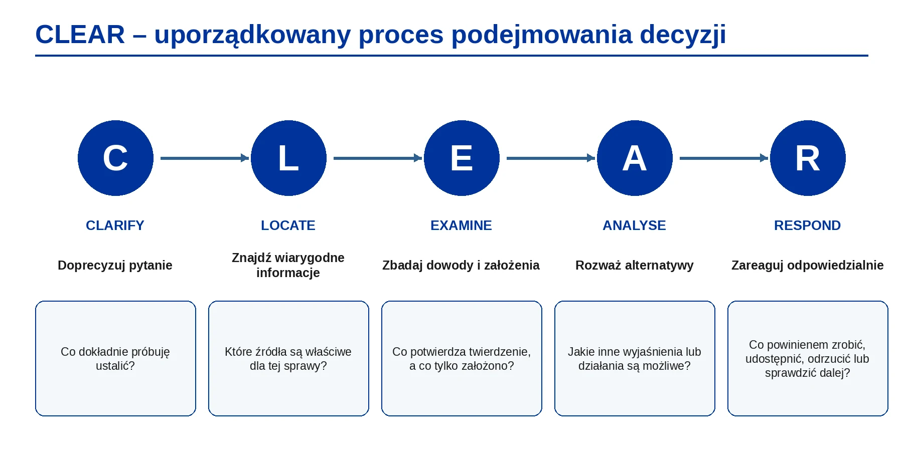
Model CLEAR porządkuje analizę informacji. Można go zastosować do wiadomości, raportu, wyniku badania, rekomendacji AI oraz decyzji zawodowej lub prywatnej.
CLEAR to angielski akronim utworzony z nazw pięciu etapów: Clarify, Locate, Examine, Analyse, Respond. W kursie służy jako porządek pracy: najpierw doprecyzuj pytanie, potem znajdź źródła, zbadaj dowody, rozważ inne wyjaśnienia i wybierz odpowiedź.
| C Clarify – doprecyzuj Co dokładnie próbuję zrozumieć albo zdecydować? | L Locate – znajdź Które źródła są wiarygodne i aktualne? | E Examine – zbadaj Co wspiera tezę, a co jest tylko założeniem? | A Analyse – rozważ Jakie inne wyjaśnienia lub działania są możliwe? | R Respond – odpowiedz Co powinienem zrobić, udostępnić, wstrzymać lub dalej sprawdzić? |
|---|
| Krok | Znaczenie | Pytanie prowadzące |
|---|---|---|
| C – Clarify | Nazwij pytanie i decyzję. | Co dokładnie chcę ustalić? |
| L – Locate | Znajdź wiarygodne, przydatne i aktualne źródła. | Które źródła nadają się do tej sprawy? |
| E – Examine | Sprawdź dowody i ujawnij założenia. | Co potwierdza twierdzenie, a co przyjęto bez dowodu? |
| A – Analyse | Rozważ alternatywne wyjaśnienia i działania. | Co jeszcze może być prawdą albo rozsądną opcją? |
| R – Respond | Wybierz reakcję proporcjonalną, etyczną i opartą na dowodach. | Co zrobię teraz, a co wymaga dalszego sprawdzenia? |
Moduł 3
| Krok CLEAR | Zastosowanie |
|---|---|
| C – Doprecyzuj | Co dokładnie wykrywa narzędzie: kłamstwo, stres, emocje, niespójność odpowiedzi czy określone zachowanie? |
| L – Znajdź źródła | Kto stworzył narzędzie? Czy istnieją niezależne badania, audyty i oceny prawne? |
| E – Zbadaj dowody | Co oznacza 99%? Na jakiej grupie testowano system? Jaki był odsetek fałszywych wskazań? |
| A – Rozważ alternatywy | Czy wynik może prowadzić do fałszywych oskarżeń? Czy system dyskryminuje określone osoby? Jak wpływa na prywatność i zaufanie? |
| R – Odpowiedz | Nie wdrażaj narzędzia bez potwierdzonych dowodów, oceny zgodności z prawem, analizy etycznej i zabezpieczeń. |
Wybierz jedną decyzję opartą na informacji z internetu. Wypełnij tylko pola potrzebne do podjęcia świadomej decyzji.
Moduł 3
Fałszywe lub mylące informacje dotyczące zdrowia mogą bezpośrednio wpływać na zachowanie i bezpieczeństwo. Mogą zachęcać do stosowania niesprawdzonych metod, rezygnacji z leczenia albo ignorowania profesjonalnej porady.
Dezinformacja zdrowotna może obejmować:
Podczas analizy informacji zdrowotnej sprawdź, czy źródłem jest uznana instytucja albo osoba posiadająca właściwe kwalifikacje, czy podano aktualne badania, czy omówiono ryzyko i korzyści oraz czy autor uczciwie wskazuje niepewność i ograniczenia.
Moduł 3
Sprawdź pięć obszarów, które pomagają ocenić ryzyko związane z poradą zdrowotną.
Osobiste doświadczenie może być szczere, lecz nie dowodzi skuteczności metody u innych osób. Określenie „naturalny” nie przesądza o bezpieczeństwie, a poprawa wyników może mieć wiele przyczyn. Poradę trzeba porównać z wiarygodnymi zaleceniami i skonsultować ze specjalistą.
Moduł 3

Narzędzia AI mogą pomóc w streszczaniu, tłumaczeniu, porządkowaniu danych i porównywaniu perspektyw. Nie gwarantują jednak prawdy ani bezstronności.
System AI może:
Przed użyciem odpowiedzi AI do decyzji zapytaj:
Moduł 3
PISA 2029 MAIL opisuje kompetencje potrzebne do oceny treści cyfrowych i odpowiedzialnego działania. W tym module rama pomaga przejść od pytania „Czy to brzmi wiarygodnie?” do decyzji opartej na źródłach, dowodach i kontekście.
| Etap decyzji | Pytanie, które porządkuje ocenę |
|---|---|
| Rozpoznanie problemu | Co dokładnie próbuję ustalić i jaka decyzja zależy od tej informacji? |
| Ocena źródła | Kto przygotował materiał, jakie ma kompetencje i czy ujawnia podstawę swoich twierdzeń? |
| Ocena dowodów | Czy dane są trafne, aktualne, kompletne i wystarczające dla przedstawionego wniosku? |
| Rozważenie alternatyw | Jakie inne wyjaśnienia pasują do dostępnych informacji? |
| Wybór działania | Co mogę zrobić teraz, a co wymaga dalszej weryfikacji lub konsultacji? |
Rama nie podaje gotowej odpowiedzi. Pomaga sprawdzić, czy decyzja wynika z dowodów, czy z pierwszego wrażenia, presji czasu albo nieujawnionego założenia.
Moduł 3
AILit Framework porządkuje kompetencje potrzebne do świadomego korzystania ze sztucznej inteligencji. W tym module najważniejsze jest rozróżnienie między pomocą w analizie a przekazaniem systemowi odpowiedzialności za decyzję.
| AI może pomóc w… | Czego nadal wymaga decyzja człowieka? |
|---|---|
| Wyszukaniu pytań i możliwych kierunków analizy | Wyboru źródeł właściwych dla sprawy i sprawdzenia ich aktualności. |
| Streszczeniu długiego materiału | Porównania streszczenia z oryginałem i wychwycenia pominiętego kontekstu. |
| Zestawieniu argumentów | Oceny jakości dowodów, konfliktu interesów i skutków różnych działań. |
| Wygenerowaniu propozycji rozwiązania | Uwzględnienia prawa, etyki, sytuacji konkretnej osoby i odpowiedzialności za wynik. |
Moduł 3

Użyj listy przy treści, która może wpłynąć na zdrowie, pracę, finanse lub opinię o innych osobach. Zaznacz wykonane kroki.
Moduł 3
Ankieta producenta może dostarczać użytecznych danych, lecz wymaga sprawdzenia metodologii i konfliktu interesów. Deklarowana szybkość pracy nie jest tym samym co zmierzona produktywność, a wynik jednej próby nie uzasadnia wniosku dotyczącego każdego pracownika i stanowiska.
Moduł 3
| Pojęcie | Definicja |
|---|---|
| Krytyczne myślenie | Analizowanie i ocenianie informacji przed jej przyjęciem, udostępnieniem albo wykorzystaniem do działania. |
| Podejmowanie decyzji | Wybór działania lub wniosku na podstawie dostępnych informacji, wartości i możliwych skutków. |
| Dowód | Informacja użyta do poparcia twierdzenia. |
| Założenie | Twierdzenie uznane za prawdziwe bez wcześniejszego udowodnienia. |
| Interpretacja | Wyjaśnienie tego, co mogą oznaczać fakty. |
| Stronniczość | Tendencja do faworyzowania określonego punktu widzenia. |
| Błąd poznawczy | Skrót myślowy, który może zniekształcić ocenę. |
| Błąd logiczny | Niepoprawny sposób rozumowania osłabiający argument. |
| Rama interpretacyjna | Sposób przedstawienia problemu, który kieruje uwagę odbiorcy na określone aspekty. |
| Narracja | Struktura opowieści służąca porządkowaniu zdarzeń. |
| Komunikowanie ryzyka | Przekazywanie informacji, które pomaga rozumieć zagrożenia i podejmować decyzje. |
| Infodemia | Nadmiar informacji, w tym treści błędnych lub mylących, szczególnie podczas kryzysu zdrowotnego. |
| Decyzja wspierana przez AI | Decyzja, na którą wpływa informacja wygenerowana, uporządkowana albo polecona przez system AI. |
Moduł 3
Wskaż umiejętność, którą chcesz stosować częściej, rozpoznaj największe ryzyko związane z AI i zapisz pytanie pomocne przed podjęciem decyzji.
Moduł 3
Oceń, na ile zgadzasz się z każdym stwierdzeniem: 1 – zdecydowanie się nie zgadzam, 5 – zdecydowanie się zgadzam. Po udzieleniu wszystkich odpowiedzi zobaczysz wynik i obszary do dalszej pracy.
| Stwierdzenie | 1 | 2 | 3 | 4 | 5 |
|---|---|---|---|---|---|
| Odróżniam fakty, opinie, interpretacje i założenia. | |||||
| Potrafię ocenić wiarygodność źródła. | |||||
| Sprawdzam, czy dowód rzeczywiście wspiera tezę. | |||||
| Rozważam alternatywne wyjaśnienia przed decyzją. | |||||
| Rozumiem ograniczenia AI podczas podejmowania decyzji. |
Moduł 3
1Informację trzeba zbadać przed uwierzeniem w nią, przekazaniem jej innym albo działaniem.
2Fakt, opinia, interpretacja i założenie nie są tym samym.
3Jakość i związek dowodu z tezą mają większe znaczenie niż liczba powtórzeń.
4Dane i statystyki wymagają kontekstu.
5Narracja i rama interpretacyjna wpływają na sposób rozumienia zdarzeń.
6Błędy logiczne i poznawcze mogą zniekształcić ocenę.
7Dezinformacja zdrowotna może prowadzić do realnej szkody.
8AI może wspierać analizę, lecz nie zastępuje ludzkiej odpowiedzialności.
9Odpowiedzialny użytkownik zatrzymuje się, sprawdza, porównuje i dopiero wtedy decyduje.
Moduł 3
Dostęp do informacji nie gwarantuje dobrej decyzji. Potrzebne są umiejętności interpretowania treści, oceny dowodów, rozpoznawania manipulacji i przewidywania skutków własnego działania.
Moduł 3
OECD – PISA 2029 Media and Artificial Intelligence Literacy: https://www.oecd.org/en/about/projects/pisa-2029-media-and-artificial-intelligence-literacy.html
AILit Framework: https://ailiteracyframework.org/
UNESCO – Media and Information Literacy Curriculum: https://www.unesco.org/mil4teachers/en/curriculum-framework/about-curriculum
World Health Organization – Infodemic: https://www.who.int/health-topics/infodemic
MODUŁ 4 · 22 tematów
Narracje medialne, polityka, migracja, wojna, język, obrazy, wartości demokratyczne i etyczne udostępnianie treści
Moduł 4
Tematy społecznie wrażliwe dotyczą wartości, tożsamości, bezpieczeństwa, praw i poczucia przynależności. Polityka, migracja, uchodźstwo, wojna, zdrowie publiczne, religia, równość, klimat, prawa mniejszości, bezrobocie i konflikty społeczne często wywołują spór, niepewność lub silne emocje.
Media mogą porządkować wiedzę o złożonych sprawach, ale mogą też je upraszczać, polaryzować i przedstawiać przez stereotyp. W internecie emocjonalne treści rozchodzą się szybko, a osoby narażone na wykluczenie bywają sprowadzane do symbolu w sporze politycznym.
Moduł nie wskazuje, jakie poglądy należy przyjąć. Pokazuje, jak analizować sposób przedstawienia problemu, dobór słów, obrazów i źródeł oraz jak komunikować się odpowiedzialnie, z poszanowaniem dowodów, godności człowieka i zasad demokratycznych.
Moduł 4
Dezinformacja, propaganda, polaryzacja i mowa nienawiści często wykorzystują tematy związane z tożsamością, bezpieczeństwem, sprawiedliwością i przynależnością. Poczucie zagrożenia lub oburzenia zwiększa skłonność do szybkiego udostępnienia materiału bez sprawdzenia.
W przypadku wojny, kryzysu, migracji albo wyborów fałszywy przekaz może tworzyć wrogie obrazy grup, podszywać się pod instytucję, podważać zaufanie do demokracji lub uzasadniać agresję. Edukatorzy i pracownicy instytucji powinni pomagać odbiorcom analizować takie treści bez wzmacniania stereotypów, plotek i konfliktu.
Moduł 4
Po zakończeniu modułu uczestnik:
1wyjaśnia, dlaczego określone tematy są społecznie wrażliwe;
2analizuje narracje dotyczące polityki, migracji, uchodźców, wojny i innych złożonych spraw;
3rozpoznaje stereotypy, dehumanizację, kozła ofiarnego i ramy polaryzujące;
4ocenia wpływ nagłówków, obrazów, statystyk i doboru źródeł;
5łączy odpowiedzialną komunikację z wartościami UE i zasadami demokracji;
6zadaje pytania etyczne przed udostępnieniem emocjonalnej treści;
7rozpoznaje wpływ treści wygenerowanych lub wzmacnianych przez AI;
8stosuje uporządkowaną analizę narracji medialnej.
Moduł 4
Temat uznajemy za społecznie wrażliwy, gdy dotyczy tożsamości, praw, bezpieczeństwa, godności lub pozycji społecznej ludzi i może wywołać silną reakcję emocjonalną, polityczną, etyczną lub kulturową.
Określenie „wrażliwy” nie oznacza, że tematu należy unikać. Sygnalizuje ryzyko realnej szkody, gdy przekaz zawiera błędy, uprzedzenia, uogólnienia lub język odbierający ludziom godność.
| Temat | Dlaczego może budzić silne reakcje | Ryzyko medialne |
|---|---|---|
| Polityka | Dotyczy władzy, tożsamości i decyzji publicznych. | Propaganda, ataki na przeciwników, fałszywe twierdzenia. |
| Migracja i uchodźcy | Łączy prawa człowieka, bezpieczeństwo, tożsamość i obawy wspólnoty. | Stereotypy, kozioł ofiarny, fałszywy kontekst, dehumanizacja. |
| Wojna i konflikt | Dotyczy przemocy, cierpienia, bezpieczeństwa i pomocy humanitarnej. | Propaganda, zmanipulowane obrazy, emocjonalne kadrowanie, twierdzenia trudne do sprawdzenia. |
| Zdrowie publiczne | Wpływa na bezpieczeństwo, zaufanie i ocenę ryzyka. | Fałszywe terapie, panika, utrata zaufania do ekspertów, zniekształcone statystyki. |
| Prawa mniejszości | Dotyczy godności, równości i włączenia społecznego. | Mowa nienawiści, selektywne historie, krzywdzące uogólnienia. |
Moduł 4

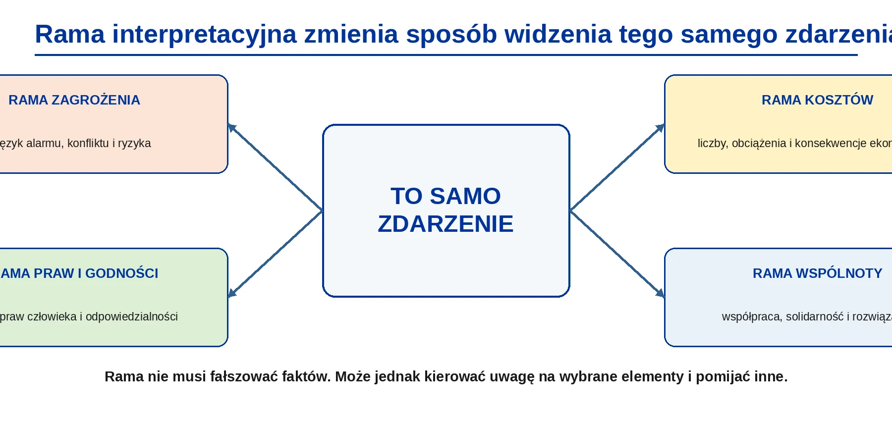
Narracja medialna porządkuje problem w formie opowieści. Wskazuje głównych aktorów, problem, odpowiedzialność, osoby poszkodowane i możliwe rozwiązanie. Rama interpretacyjna wybiera punkt widzenia, z którego przedstawia się sprawę.
| Zagadnienie | Możliwa rama | Prawdopodobna interpretacja odbiorcy |
|---|---|---|
| Migracja | Humanitarna | Ludzie szukają bezpieczeństwa i ochrony. |
| Migracja | Bezpieczeństwa | Migracja zostaje przedstawiona głównie jako zagrożenie. |
| Wojna | Cierpienia ludzi | Uwaga skupia się na cywilach, uchodźcach i pomocy. |
| Wojna | Strategiczna | Uwaga skupia się na celach wojskowych, sojuszach i władzy. |
| Polityka | Konfliktu | Polityka wygląda jak nieustanna walka dwóch stron. |
| Polityka | Interesu publicznego | Uwaga skupia się na dowodach, skutkach decyzji i obywatelach. |
Rama nie jest automatycznie błędna. Problem pojawia się, gdy jedna perspektywa całkowicie dominuje i odbiorca nie widzi złożoności, innych przyczyn albo głosów osób, których temat dotyczy.
A „Nowe centrum obsługi migrantów pomoże rodzinom sprawniej załatwić formalności”.
B „Kolejne wydatki na migrantów – miasto uruchamia specjalne centrum”.
Moduł 4
Komunikacja polityczna jest częścią demokracji. Obywatele potrzebują informacji o decyzjach, programach i skutkach polityk publicznych. Szkodliwy charakter pojawia się wtedy, gdy przekaz opiera się na manipulacji, fałszywych twierdzeniach, teoriach spiskowych, poniżaniu przeciwników albo atakach na instytucje demokratyczne bez dowodów.
Polaryzacja oznacza narastający podział między grupami i coraz mniejszą gotowość do słuchania. Materiał może ją wzmacniać przez podział na „dobrych i złych”, „patriotów i zdrajców”, „zwykłych ludzi i wrogów” albo „jedynych obrońców prawdy i skorumpowane elity”.
Moduł 4
Przekazy dotyczące migracji mogą skupiać się na ochronie i prawach człowieka, bezpieczeństwie granic, kulturze, gospodarce, usługach publicznych albo konflikcie politycznym. Krytyczna analiza nie wymaga ignorowania problemów. Wymaga sprawdzenia faktów, języka, obrazu i sposobu przedstawienia ludzi.
| Wzorzec problematyczny | Ryzyko | Pytanie krytyczne |
|---|---|---|
| Uogólnienie | Działanie jednej osoby zostaje przedstawione jako typowe dla całej grupy. | Czy twierdzenie dotyczy jednostki, czy wszystkich osób? |
| Język dehumanizujący | Ludzie są opisywani jako „fala”, „zalew”, „zagrożenie” lub przedmiot. | Czy język zachowuje godność człowieka? |
| Fałszywy kontekst | Stare zdjęcie zostaje opisane jako aktualne. | Gdzie i kiedy wykonano materiał? |
| Selektywny dobór źródeł | Cytuje się wyłącznie jedną stronę. | Czyich głosów brakuje? |
| Kozioł ofiarny | Złożony problem przypisuje się jednej grupie. | Jakie inne przyczyny pominięto? |
Moduł 4

Podczas wojny odbiorca może zobaczyć oficjalne komunikaty, nagrania świadków, propagandę, plotki, obrazy przemocy i materiały wygenerowane przez AI. Informacja może służyć do informowania, mobilizowania, uzasadniania działań, zastraszania albo dezorientowania.
Silna emocja nie dowodzi, że materiał jest fałszywy. Powinna jednak uruchomić ostrożność. Przed udostępnieniem sprawdź:
Nagranie pokazuje rzekomy atak, lecz nie zawiera miejsca, daty ani źródła. Widać twarze i tablice rejestracyjne.
Moduł 4
Nagłówek, zdjęcie, etykieta i cytat kierują pierwszym wrażeniem. Mogą pokazać grupę jako zagrożenie, ofiarę, winnego, bohatera albo bezimienną masę.
| Element | Możliwy wpływ | Pytanie krytyczne |
|---|---|---|
| Nagłówek | Ustawia interpretację przed przeczytaniem tekstu. | Czy nagłówek odpowiada treści? |
| Obraz | Natychmiast wywołuje emocje i podpowiada znaczenie. | Czy jest aktualny, związany z wydarzeniem i przedstawiony z szacunkiem? |
| Etykieta | Nadaje osobie albo grupie określoną kategorię. | Czy określenie jest trafne, potrzebne i niedehumanizujące? |
| Statystyka | Buduje wrażenie skali albo pilności. | Czy liczba ma źródło i kontekst? |
| Dobór cytatów | Pokazuje, które głosy mają znaczenie. | Czy uwzględniono właściwe i zróżnicowane perspektywy? |
| Powtarzane słowo | Z czasem normalizuje określone skojarzenie. | Jakie założenie utrwala ten język? |
Dehumanizacja polega na przedstawianiu ludzi jako mniej niż w pełni ludzkich: jako przedmiotów, choroby, zwierząt, anonimowej masy albo zagrożenia. Taki język ułatwia ignorowanie cierpienia, usprawiedliwianie wykluczenia i akceptowanie przemocy.
Moduł 4
Odpowiedzialna komunikacja o tematach wrażliwych łączy się z godnością człowieka, wolnością, demokracją, równością, praworządnością i poszanowaniem praw człowieka, w tym praw osób należących do mniejszości.
| Wartość lub zasada | Związek z edukacją medialną |
|---|---|
| Godność człowieka | Unikanie języka i obrazów, które sprowadzają ludzi do stereotypu lub przedmiotu. |
| Wolność wypowiedzi | Ochrona otwartej debaty wraz z odpowiedzialnością za szkodę, nękanie i mowę nienawiści. |
| Demokracja | Uczestnictwo oparte na dowodach, pluralizmie i odpowiedzialności. |
| Równość | Unikanie dyskryminującego przedstawiania grup. |
| Praworządność | Oddzielanie twierdzenia od dowodu i poszanowanie procedur zamiast „wyroku internetu”. |
| Prawa człowieka | Ocena skutków udostępnienia materiału dla osób narażonych na krzywdę. |
Moduł 4


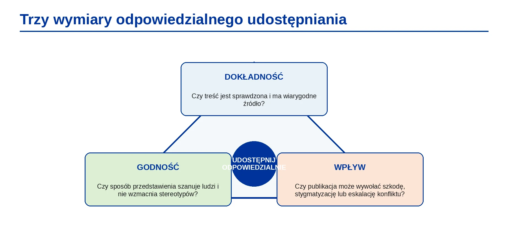
Treść może być ciekawa, emocjonalna albo częściowo prawdziwa, a mimo to jej udostępnienie bez kontekstu może wyrządzić szkodę. Przed publikacją warto wyjść poza pytanie: „Czy się z tym zgadzam?”.
Moduł 4
AI może generować fałszywe obrazy, głosy, filmy, historie, komentarze i podsumowania. Systemy rekomendacyjne mogą zwiększać zasięg treści emocjonalnych i polaryzujących, ponieważ takie materiały często przyciągają uwagę.
AI może również wspierać tłumaczenie, dostępność, analizę i weryfikację. Ryzyko zależy od sposobu użycia, przejrzystości i kontroli człowieka.
Moduł 4
PISA 2029 MAIL dotyczy oceny treści cyfrowych, rozumienia mediów i odpowiedzialnego działania. W tematach społecznie wrażliwych pomaga oddzielić sprawdzanie faktów od oceny sposobu, w jaki przekaz przedstawia ludzi, grupy i możliwe rozwiązania.
| Element przekazu | Co należy sprawdzić? |
|---|---|
| Źródło i dowody | Czy dane, obrazy i cytaty są autentyczne, aktualne i przedstawione w pełnym kontekście? |
| Język | Czy opisuje konkretne zachowania, czy przypisuje cechy całej grupie? |
| Rama interpretacyjna | Kogo przedstawiono jako zagrożenie, ofiarę, sprawcę lub osobę pozbawioną głosu? |
| Cel publikacji | Czy materiał informuje, przekonuje, mobilizuje, straszy albo pogłębia podział? |
| Skutek udostępnienia | Czy dalsze rozpowszechnienie może zwiększyć wiedzę, czy raczej utrwalić stereotyp lub narazić kogoś na szkodę? |
Rzetelna analiza obejmuje prawdziwość informacji, sposób przedstawienia problemu i konsekwencje komunikatu dla konkretnych osób.
Moduł 4
AILit Framework opisuje kompetencje związane z rozumieniem i używaniem sztucznej inteligencji. W sprawach społecznie wrażliwych pomaga zauważyć, że ryzyko może pojawić się podczas tworzenia treści, jej rekomendowania, moderowania i późniejszego udostępniania.
| Gdy AI… | Sprawdź |
|---|---|
| generuje opis osoby lub grupy | Czy nie powiela stereotypu, nie przypisuje intencji i nie używa dehumanizującego języka. |
| tworzy obraz albo nagranie | Czy materiał jest oznaczony, nie podszywa się pod dokument wydarzenia i nie naraża przedstawionych osób. |
| streszcza spór społeczny | Czy zachowuje różnicę między faktem, opinią i niepewnością oraz nie pomija głosów istotnych dla sprawy. |
| poleca kolejne materiały | Czy rekomendacje nie wzmacniają jednej narracji, oburzenia lub wrogości wobec grupy. |
| wspiera przygotowanie publikacji | Kto sprawdzi treść i poniesie odpowiedzialność za jej rzetelność oraz możliwe skutki. |
Odpowiedzialne korzystanie z AI wymaga ludzkiej kontroli, zwłaszcza gdy przekaz dotyczy bezpieczeństwa, praw, tożsamości albo reputacji innych osób.
Moduł 4
Wybierz artykuł, film, post lub grafikę dotyczącą sprawy społecznie wrażliwej. Oceń dominującą ramę, język, dowody, obecność różnych perspektyw oraz możliwe skutki udostępnienia.
Moduł 4
Sam wzrost procentowy nie pokazuje skali zjawiska. Potrzebne są liczby bezwzględne, wielkość populacji, definicja „zatrzymania”, porównywalne okresy i dane o innych grupach. Związek dwóch zjawisk nie dowodzi przyczynowości, a statystyka dotycząca zdarzeń nie opisuje wszystkich osób należących do danej grupy.
Moduł 4
| Pojęcie | Definicja |
|---|---|
| Temat społecznie wrażliwy | Sprawa silnie związana z wartościami, tożsamością, prawami, bezpieczeństwem lub relacjami społecznymi. |
| Narracja medialna | Opowieść wskazująca aktorów, problem, odpowiedzialność i możliwe rozwiązanie. |
| Rama interpretacyjna | Perspektywa, z której przedstawia się problem. |
| Polaryzacja | Narastający podział między grupami i spadek gotowości do słuchania. |
| Stereotyp | Uproszczone i uogólnione przekonanie o grupie. |
| Kozioł ofiarny | Przypisanie złożonego problemu jednej osobie lub grupie bez wystarczających dowodów. |
| Dehumanizacja | Przedstawianie ludzi jako mniej niż w pełni ludzkich, np. jako zagrożenie, przedmiot lub bezimienną masę. |
| Mowa nienawiści | Wypowiedź atakująca albo poniżająca ludzi z powodu ich cech lub przynależności grupowej. |
| Manipulacja informacją | Strategiczne wykorzystanie fałszywej, mylącej lub zniekształconej informacji do wpływania na odbiór i zachowanie. |
| Komunikacja etyczna | Komunikacja uwzględniająca dokładność, godność, ryzyko szkody i odpowiedzialność publiczną. |
| Media syntetyczne | Tekst, obraz, dźwięk lub film wygenerowany albo zmieniony przez AI. |
Moduł 4
Wybierz trzy odpowiedzi i zapisz jedną zasadę etyczną.
Moduł 4
Oceń, na ile zgadzasz się z każdym stwierdzeniem: 1 – zdecydowanie się nie zgadzam, 5 – zdecydowanie się zgadzam. Po udzieleniu wszystkich odpowiedzi zobaczysz wynik i obszary do dalszej pracy.
| Stwierdzenie | 1 | 2 | 3 | 4 | 5 |
|---|---|---|---|---|---|
| Rozpoznaję narracje i ramy medialne. | |||||
| Zauważam stereotypy i język dehumanizujący. | |||||
| Sprawdzam wpływ nagłówka i obrazu na interpretację. | |||||
| Oceniam kontekst i możliwą szkodę przed udostępnieniem. | |||||
| Rozpoznaję wpływ AI na tematy społecznie wrażliwe. |
Moduł 4
1Tematy społecznie wrażliwe wymagają komunikacji opartej na dowodach, etyce i szacunku.
2Narracje medialne wpływają na rozumienie polityki, migracji, wojny i konfliktów społecznych.
3Rama, język, obraz, statystyka i dobór źródeł kierują oceną odbiorcy.
4Stereotypy, kozioł ofiarny i dehumanizacja mogą prowadzić do realnej szkody.
5Odpowiedzialna edukacja medialna łączy się z godnością człowieka i zasadami demokracji.
6AI może generować albo wzmacniać materiały zwiększające polaryzację.
7Przed udostępnieniem trzeba ocenić dokładność, godność i wpływ.
8Krytyczna edukacja medialna chroni dialog demokratyczny i spójność społeczną.
Moduł 4
O tematach wrażliwych trzeba mówić precyzyjnie, z szacunkiem i świadomością skutków. Jeden nagłówek, obraz lub post może zmienić stosunek odbiorców do całej społeczności albo do osób dotkniętych wojną, kryzysem lub wykluczeniem.
Moduł 4
OECD – PISA 2029 Media and Artificial Intelligence Literacy: https://www.oecd.org/en/about/projects/pisa-2029-media-and-artificial-intelligence-literacy.html
European Commission i OECD – AILit Framework: https://ailiteracyframework.org/
European Commission – Media Literacy: https://digital-strategy.ec.europa.eu/en/policies/media-literacy
European Commission – Building societal resilience against information manipulation: https://commission.europa.eu/topics/countering-information-manipulation/building-societal-resilience-against-disinformation_en
Council of the European Union – Disinformation and democratic resilience: https://www.consilium.europa.eu/en/policies/disinformation-and-democratic-resilience/
European Commission – Information manipulation and misinformation in civil protection and humanitarian aid: https://civil-protection-humanitarian-aid.ec.europa.eu/resources-campaigns/information-manipulation-and-misinformation_en
UNESCO – Media and Information Literacy Curriculum for Teachers and Learners: https://www.unesco.org/mil4teachers/en/curriculum-framework/about-curriculum
MODUŁ 5 · 24 tematów
Przeciążenie informacyjne, doomscrolling, emocje, zdrowe nawyki, odpowiedzialny dialog i sprawczość w środowisku z udziałem AI
Moduł 5
Ostatni moduł łączy wcześniejsze zagadnienia z odpornością informacyjną, dobrostanem i uczestnictwem demokratycznym.
Samo rozpoznanie fałszywej informacji nie wystarcza, gdy odbiorca działa w stanie przeciążenia, stresu lub zniechęcenia. Potrzebuje sposobu korzystania z wiadomości, który chroni równowagę, samodzielność oceny i gotowość do udziału w sprawach publicznych.
Informacja wspiera naukę, pracę i udział w demokracji. Stały kontakt z wiadomościami o kryzysach, konflikcie, przemocy, polaryzacji oraz treściami generowanymi przez AI może jednak prowadzić do napięcia, lęku, dezorientacji i utraty zaufania.
W module wypracujesz nawyki, które pomagają zachować kontakt z informacją bez stałego przeciążenia. Przećwiczysz również odpowiedzialną komunikację i udział w debacie oparty na otwartości, szacunku, pluralizmie, godności oraz rzetelnej rozmowie.
Moduł 5
Odporność informacyjna oznacza zdolność pozostania osobą poinformowaną i krytyczną bez ciągłego działania pod wpływem napięcia. Nie wymaga unikania trudnych wiadomości. Wymaga nawyków, które oddzielają pierwszą emocję od decyzji o dalszym działaniu.
Wyczerpanie, strach i przeciążenie zwiększają podatność na proste wyjaśnienia, alarmujące posty i wycofanie z rozmowy publicznej. Stan psychiczny odbiorcy wpływa zatem na sposób oceny informacji i podejmowania decyzji.
Moduł 5
Po zakończeniu modułu uczestnik:
1wyjaśnia znaczenie odporności informacyjnej w środowisku cyfrowym i z udziałem AI;
2rozpoznaje skutki przeciążenia informacyjnego, doomscrollingu i stałego kontaktu z negatywnymi wiadomościami;
3wskazuje własne nawyki zwiększające lub ograniczające stres;
4stosuje strategie zdrowszego i bardziej świadomego korzystania z mediów;
5zamienia impulsywną reakcję na spokojniejszą odpowiedź;
6łączy edukację medialną z wartościami demokratycznymi i odpowiedzialnym uczestnictwem;
7rozumie, jak AI może wspierać albo osłabiać dobrostan i debatę;
8tworzy osobisty plan zdrowego i odpowiedzialnego korzystania z informacji.
Moduł 5
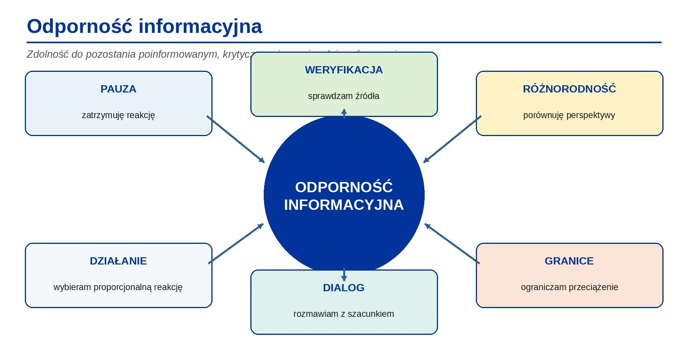
Odporność informacyjna to zdolność działania w szybkim, złożonym i czasem manipulacyjnym obiegu treści bez rezygnacji z krytycznego myślenia, zasad etycznych i konstruktywnego uczestnictwa.
Osoba odporna informacyjnie potrafi:
Moduł 5
Przeciążenie informacyjne pojawia się wtedy, gdy liczba wiadomości przekracza możliwość ich sensownego przetworzenia. Powiadomienia, „pilne” komunikaty, nieskończone przewijanie, automatyczne rekomendacje i presja, aby stale być na bieżąco, zwiększają ten problem.
Doomscrolling to nawyk ciągłego przeglądania negatywnych, alarmujących albo przygnębiających treści mimo rosnącego napięcia i zmęczenia.
Możliwe sygnały przeciążenia:
Najpierw zaznacz wszystkie sygnały, które u siebie rozpoznajesz. Potem wybierz jeden priorytet i jedno działanie na najbliższy tydzień.
Zaznacz zachowania zauważone w ostatnich dwóch tygodniach. To nie jest diagnoza.
Moduł 5
Emocje mogą być adekwatną reakcją na realne wydarzenie. Manipulacyjny przekaz może jednak celowo wzbudzać strach, oburzenie, upokorzenie albo pilność, aby ograniczyć refleksję i zwiększyć zasięg.
Stres może prowadzić do:
Moduł 5

Zdrowy nawyk powinien być realistyczny. Nie chodzi o całkowite odcięcie od informacji, lecz o taki sposób korzystania, który wspiera rozumienie i odpoczynek.
| Nawyk | Dlaczego pomaga | Przykład działania |
|---|---|---|
| Wyznacz godziny | Ogranicza kompulsywne sprawdzanie i zmęczenie. | Sprawdzaj wiadomości o dwóch ustalonych porach. |
| Wybierz wiarygodne źródła | Poprawia jakość informacji i zmniejsza szum. | Obserwuj niewielką liczbę źródeł oficjalnych, eksperckich i dziennikarskich. |
| Porównuj perspektywy | Ogranicza komory pogłosowe. | Czytaj różne wiarygodne źródła, a nie skrajne treści. |
| Zatrzymaj się przed udostępnieniem | Ogranicza przypadkowe wzmacnianie dezinformacji. | Odczekaj 30 sekund i sprawdź źródło. |
| Przerwij doomscrolling | Chroni uwagę i równowagę emocjonalną. | Zakończ przewijanie, gdy przestaje dostarczać wiedzy i tylko zwiększa lęk. |
| Sprawdzaj źródło pierwotne | Przywraca kontekst i dokładność. | Otwórz raport, badanie, komunikat albo dane, do których odwołuje się post. |
| Oddziel odpoczynek od wiadomości | Ułatwia regenerację i sen. | Nie czytaj drastycznych wiadomości tuż przed snem. |
| Korzystaj z AI krytycznie | Ogranicza zależność od skrótów i pewnie brzmiących błędów. | Porównaj odpowiedź AI ze źródłami pierwotnymi. |
Wybierz trzy typowe momenty kontaktu z informacją. Przy każdym zaznacz źródło, cel oraz odczucie po zakończeniu korzystania z mediów.
| Moment | Źródło | Cel | Odczucie po zakończeniu |
|---|---|---|---|
| 1 | |||
| 2 | |||
| 3 |
Moduł 5
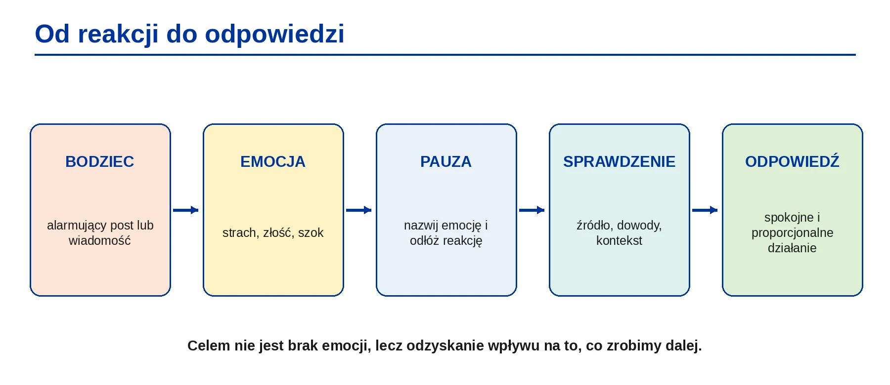
Reakcja jest szybka i impulsywna. Odpowiedź jest wolniejsza, bardziej refleksyjna i uwzględnia skutki.
| Kiedy reaguję | Kiedy odpowiadam |
|---|---|
| Udostępniam, bo jestem wstrząśnięty. | Zatrzymuję się i sprawdzam źródło. |
| Uznaję pierwsze wyjaśnienie za prawdziwe. | Szukam innych możliwości i brakującego kontekstu. |
| Skupiam się wyłącznie na emocji. | Nazywam emocję i osobno badam dowody. |
| Atakuję osobę, która się nie zgadza. | Pytam o twierdzenie i dowody. |
| Zwiększam zasięg alarmującej treści. | Udostępniam materiał sprawdzony, potrzebny i opisany w kontekście. |
Moduł 5
Zaangażowanie demokratyczne oznacza odpowiedzialny udział w życiu publicznym. W internecie może obejmować czytanie wiadomości, dyskusję, głosowanie, kontakt z instytucją, udział w konsultacji, tworzenie treści lub wspieranie działań społecznych.
Edukacja medialna wspiera ten udział, ponieważ pomaga:
Samo posiadanie informacji nie wystarcza. Demokracja potrzebuje ludzi, którzy potrafią używać informacji odpowiedzialnie.
Moduł 5
Godność, wolność, demokracja, równość, praworządność i prawa człowieka stanowią punkt odniesienia podczas rozmowy o migracji, wojnie, wyborach, zdrowiu publicznym, konflikcie społecznym i prawach mniejszości.
Moduł 5
Obywatel cyfrowy ma prawo do wypowiedzi, informacji i udziału w debacie. Ma również odpowiedzialność za sposób traktowania innych i jakość wspólnej przestrzeni informacyjnej.
Demokratyczna rozmowa nie wymaga zgody. Wymaga zachowania dowodów, godności i możliwości uczenia się.
| Zachowanie mniej konstruktywne | Zachowanie bardziej konstruktywne |
|---|---|
| Obrażanie osoby | Pytanie o twierdzenie i dowód |
| Udostępnienie zrzutu bez kontekstu | Link do źródła pierwotnego |
| Stereotyp | Dokładny i szanujący opis |
| Natychmiastowe przypisanie złej intencji | Pytanie doprecyzowujące |
| Rozpowszechnienie plotki | Poczekanie na weryfikację |
| Uznanie każdej różnicy zdań za manipulację | Odróżnienie sporu od świadomego oszustwa |
Wybierz odpowiedź, która przenosi rozmowę z osoby na dane i metodę.
Moduł 5
Różnica między źródłami nie oznacza automatycznie, że wszystkie są równie niewiarygodne. Nowe dowody mogą zmienić stan wiedzy, eksperci mogą różnić się interpretacją, a jedno źródło może po prostu popełniać błąd.
Moduł 5
AI wpływa na wyszukiwanie, produkcję treści i rozmowę publiczną. Może pomagać w streszczaniu, tłumaczeniu, dostępności i porównywaniu perspektyw. Może też zwiększać przeciążenie i zniekształcać debatę.
Ryzyka obejmują:
Moduł 5
PISA 2029 MAIL to obszar badania OECD dotyczący kompetencji medialnych i kompetencji związanych ze sztuczną inteligencją. Skrót MAIL oznacza Media and Artificial Intelligence Literacy. Badanie dotyczy uczniów, a w tym kursie rama porządkuje umiejętności przydatne każdej osobie korzystającej z wiadomości, platform cyfrowych i narzędzi AI.
Nie przygotowujesz się tutaj do testu PISA. Sprawdzasz, jak rozpoznane wcześniej kompetencje można zastosować w zwykłych sytuacjach informacyjnych.
| Gdy korzystasz z informacji… | Zastosuj |
|---|---|
| Treść wywołuje silną emocję | Zatrzymaj się przed reakcją i oddziel emocję od oceny dowodów. |
| Nie masz pewności, czy informacja jest prawdziwa | Dotrzyj do źródła pierwotnego i porównaj przekaz z innymi wiarygodnymi materiałami. |
| Materiał podsunęła platforma lub AI | Sprawdź, dlaczego mógł zostać wyświetlony i jakiego kontekstu w nim brakuje. |
| Chcesz udostępnić post lub nagranie | Oceń potwierdzenie treści oraz możliwe skutki jej dalszego rozpowszechnienia. |
| Temat budzi spór społeczny lub polityczny | Oddziel fakty od opinii, poszukaj innych perspektyw i unikaj ataku na osoby. |
Moduł 5
AILit Framework to ramy kompetencji w zakresie sztucznej inteligencji opracowane przez Komisję Europejską i OECD. W tym module służą do oceny, czy AI wspiera świadome korzystanie z informacji, czy zwiększa pośpiech, przeciążenie albo zależność od automatycznych rekomendacji.
| Sytuacja | Pytanie kontrolne |
|---|---|
| AI streszcza wiele wiadomości | Czy streszczenie pomaga zrozumieć temat, czy zachęca do konsumowania jeszcze większej liczby treści bez sprawdzania źródeł? |
| System stale poleca podobne materiały | Czy rekomendacje zawężają perspektywę albo podtrzymują napięcie i doomscrolling? |
| AI tworzy odpowiedź na temat publiczny | Czy mogę sprawdzić dane, datę i źródła, zanim potraktuję odpowiedź jako podstawę działania? |
| Korzystam z AI przy publikowaniu treści | Czy materiał jest rzetelny, oznaczony i bezpieczny dla osób, których dotyczy? |
| Narzędzie zaczyna zastępować mój własny osąd | Czy potrzebuję przerwy, kontaktu ze źródłem pierwotnym albo konsultacji z człowiekiem? |
AI może porządkować informacje i ograniczać część pracy, lecz nie powinna odbierać użytkownikowi kontroli nad tempem, źródłami i ostateczną decyzją.
Moduł 5
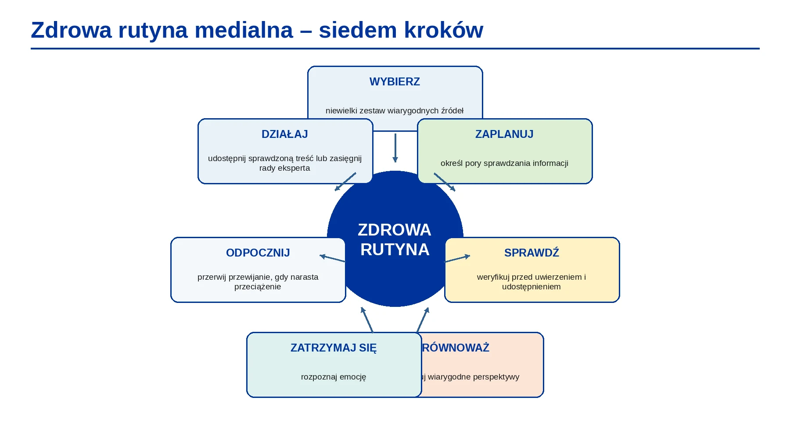
Ułóż własną rutynę medialną. W każdym z pięciu obszarów wybierz działanie, które możesz zastosować w codziennym korzystaniu z informacji.
Moduł 5

SHARE to krótka checklista pomocna przed udostępnieniem treści. Litery przypominają o pięciu obszarach: Source – źródło, Harm – możliwa szkoda, Accuracy – potwierdzenie i dowody, Reason – powód udostępnienia oraz Emotion – emocja kierująca reakcją.
Checklista nie rozstrzyga automatycznie, czy materiał jest prawdziwy. Pomaga zatrzymać impuls i wybrać działanie proporcjonalne do poziomu pewności oraz ryzyka.
Wybierz post, który rozważasz udostępnić. Następnie przejdź przez pięć pytań checklisty SHARE i zaznacz odpowiedzi zgodne z oceną materiału.
Moduł 5
Jeden wynik lokalny nie opisuje postaw obywateli w całym kraju. Trzeba porównać dane z wielu gmin i okresów oraz sprawdzić lokalne przyczyny zmiany. Z danych o frekwencji nie wynika automatycznie, że udział w wyborach jest bezcelowy.
Moduł 5
| Pojęcie | Definicja |
|---|---|
| Odporność informacyjna | Zdolność pozostania osobą krytyczną, zrównoważoną i odpowiedzialną w złożonym środowisku informacji. |
| Dobrostan | Stan równowagi emocjonalnej, psychicznej i społecznej wspierający codzienne funkcjonowanie. |
| Przeciążenie informacyjne | Sytuacja, w której liczba informacji przekracza możliwość ich sensownego przetworzenia. |
| Doomscrolling | Powtarzające się przeglądanie negatywnych i stresujących treści. |
| Obywatelstwo cyfrowe | Odpowiedzialne, etyczne i aktywne uczestnictwo w środowisku cyfrowym. |
| Zaangażowanie demokratyczne | Świadomy i odpowiedzialny udział w życiu publicznym. |
| Odpowiedzialna komunikacja | Udostępnianie i omawianie informacji w sposób dokładny, sprawiedliwy i szanujący innych. |
| Sprawczość człowieka | Zdolność podejmowania własnych, świadomych decyzji zamiast biernego podążania za automatycznym systemem. |
| Informacja z udziałem AI | Treść wygenerowana, uporządkowana, streszczona albo polecona przez system AI. |
| Odporność obywatelska | Zdolność społeczności do podtrzymywania dialogu, zaufania i uczestnictwa mimo presji i manipulacji. |
Moduł 5
Wybierz trzy odpowiedzi i zapisz jedno zobowiązanie.
Moduł 5
Oceń, na ile zgadzasz się z każdym stwierdzeniem: 1 – zdecydowanie się nie zgadzam, 5 – zdecydowanie się zgadzam. Po udzieleniu wszystkich odpowiedzi zobaczysz wynik i obszary do dalszej pracy.
| Stwierdzenie | 1 | 2 | 3 | 4 | 5 |
|---|---|---|---|---|---|
| Rozpoznaję sygnały przeciążenia informacyjnego. | |||||
| Potrafię ograniczyć doomscrolling i ustalić granice. | |||||
| Zatrzymuję się przed reakcją na emocjonalną treść. | |||||
| Prowadzę spór bez atakowania osoby. | |||||
| Podejmuję odpowiedzialną decyzję przed udostępnieniem. |
Moduł 5
1Odporność stanowi część edukacji medialnej.
2Przeciążenie informacyjne może osłabiać uwagę, zaufanie i równowagę emocjonalną.
3Zdrowe nawyki pozwalają być poinformowanym bez stałego przeciążenia.
4Silna emocja jest sygnałem do zatrzymania, sprawdzenia i namysłu.
5Zaangażowanie demokratyczne wymaga rzetelnej informacji i odpowiedzialnej komunikacji.
6Spór jest częścią demokracji, lecz dehumanizacja i manipulacja niszczą dialog.
7AI może ułatwiać dostęp do informacji, ale również zwiększać przeciążenie, uprzedzenia i manipulację.
8Odpowiedzialny obywatel cyfrowy chroni własny dobrostan i jakość wspólnego środowiska informacyjnego.
Moduł 5
Edukacja medialna wspiera dobrostan i odpowiedzialny udział w demokracji. Nie wymaga ciągłego śledzenia wiadomości; wymaga spokojnego, krytycznego i celowego korzystania z informacji.
Moduł 5
OECD – PISA 2029 Media and Artificial Intelligence Literacy: https://www.oecd.org/en/about/projects/pisa-2029-media-and-artificial-intelligence-literacy.html
AILit Framework – About the AI Literacy Framework: https://ailiteracyframework.org/about/
European Commission – Media Literacy: https://digital-strategy.ec.europa.eu/en/policies/media-literacy
European Commission – Building societal resilience against information manipulation: https://commission.europa.eu/topics/countering-information-manipulation/building-societal-resilience-against-information-manipulation_en
World Health Organization – Stress: Questions and answers: https://www.who.int/news-room/questions-and-answers/item/stress/
World Health Organization – Infodemic: https://www.who.int/health-topics/infodemic
Council of the European Union – Disinformation and democratic resilience: https://www.consilium.europa.eu/en/policies/disinformation-and-democratic-resilience/
NA KONIEC KURSU
Zachowaj uzupełnione ćwiczenia. Pokazują, czego się nauczyłeś oraz jak oceniasz informacje i podejmujesz decyzje.
ZAKOŃCZENIE KURSU
Po ukończeniu pięciu modułów wykonaj test końcowy i wypełnij ankietę ewaluacyjną. Organizator sprawdzi oba formularze podczas weryfikacji warunków otrzymania certyfikatu.
Test sprawdza najważniejsze kompetencje rozwijane w pięciu modułach. Zaliczenie zgodnie z progiem wskazanym w formularzu jest warunkiem otrzymania certyfikatu.
Otwórz test końcowyGoogle FormsOceń treść, sposób prowadzenia ćwiczeń i działanie kursu. Odpowiedzi pomogą przygotować kolejne edycje szkolenia i usunąć elementy, które utrudniają naukę.
Otwórz ankietę końcowąGoogle FormsTWOJA LISTA KONTROLNA
0 z 4 formularzy oznaczonych jako wykonane · 0 z 5 modułów ukończonych
Ostateczne potwierdzenie następuje na podstawie odpowiedzi w Google Forms i wyniku testu końcowego.DOKUMENT DO WERYFIKACJI
Po spełnieniu wszystkich warunków możesz pobrać PDF zawierający oświadczenie o ukończeniu pięciu modułów w 100% oraz o wypełnieniu formularzy Google Forms.
Uzupełnij imię, nazwisko i adres e-mail. Następnie pobierz PDF i dołącz go ręcznie do wiadomości wysyłanej na adres lmalinowski@wup-katowice.pl.
Dokument nie jest certyfikatem. Stanowi oświadczenie uczestnika i podstawę do sprawdzenia ukończenia kursu, formularzy oraz wyniku testu końcowego.